Tikz - Control Diagram
Table of Contents
- 1. Control Synthesis - General Procedure
- 2. Classical Feedback
- 2.1. One Degree of Freedom
- 2.2. One Degree of Freedom
- 2.3. One Degree of Freedom - Alternative
- 2.4. One Degree of Freedom - Small
- 2.5. One Degree of Freedom - Alternative bis
- 2.6. One Degree of Freedom - Check Stability
- 2.7. One Degree of Freedom - Measurement transfer function
- 2.8. Two Degrees of Freedom
- 2.9. Two Degrees of Freedom - Alternative
- 2.10. Two Degrees of Freedom - Simple
- 2.11. Two Degrees of Freedom - separated
- 2.12. One Degree of freedom with ADC and DAC
- 3. Feedforward
- 4. General Control Configuration
- 4.1. Generalized Plant
- 4.2. General Control configuration
- 4.3. General Control configuration - Names
- 4.4. General Control Configuration - Diagonal Control
- 4.5. General Control Configuration - 1DoF Feedback
- 4.6. Weighted General Control Configuration
- 4.7. General Control Configuration - Weighted 1DoF Feedback
- 4.8. Uncertainty block
- 4.9. Uncertainty block - NDelta configuration
- 4.10. M Delta Analysis
- 5. Control Architectures
- 6. Input Output Uncertainty
- 7. Sensor Fusion
- 7.1. Mechanical Architecture
- 7.2. Sensor Fusion with complementary filters
- 7.3. General Sensor Fusion with real sensors
- 7.4. Equivalent configuration
- 7.5. Equivalent configuration - classical Feedback
- 7.6. Equivalent configuration - classical Feedback with pre-filter
- 7.7. H-Infinity - Complementary filters - Generalized plant
- 7.8. H-Infinity - Complementary filters - Generalized plant - bis
- 7.9. H-Infinity - Complementary filters
- 7.10. H-Infinity - Complementary filters - bis
- 7.11. H-Infinity - 3 Complementary filters
- 7.12. Generate Complementary Filters using Feedback Control Architecture
- 7.13. Equivalent configuration - classical Feedback
- 8. Rotating Frame
- 9. Control Tradeoffs
- 10. Modern Control
- 11. H-Infinity Control
- 11.1. S/KS Mixed sensitivity - Disturbance Rejection
- 11.2. S/KS Mixed sensitivity - Reference Tracking
- 11.3. S/T Mixed sensitivity
- 11.4. Signal Based H-Infinity
- 11.5. Signal Based H-Infinity with uncertainty
- 11.6. Mixed sensitivity configuration
- 11.7. 4 blocs criterion
- 11.8. 4 blocs criterion - bis
- 11.9. 4 blocs criterion - General conf
- 11.10. 4 blocs criterion - General conf with noise
- 11.11. Two Degrees of Freedom - H-infinity
- 12. MIMO Control
- 12.1. Plant
- 12.2. Plant - Leg measurement
- 12.3. Jacobian
- 12.4. Jacobian Control - Cartesian Frame
- 12.5. Jacobian Control - Cartesian Frame
- 12.6. Modal Transformation
- 12.7. SVD Control - Static
- 12.8. Inverse Based Control
- 12.9. MIMO Sensor Fusion
- 12.10. MIMO Sensor Fusion - Equivalent Feedback Control
- 12.11. MIMO Sensor Fusion - Equivalent Feedback Control - bis
- 13. Others
- 13.1. Huddle test
- 13.2. Coprime uncertainty
- 13.3. Coprime uncertainty - Bis
- 13.4. Shaped Plant
- 13.5. Practical Implementation
- 13.6. Anti-Windup
- 13.7. Block Diagonal Scalings
- 13.8. Disturbance Observer
- 13.9. Disturbance Observer with controller
- 13.10. Internal Model Control
- 13.11. Inverse Based Control
1 Control Synthesis - General Procedure
1.1 Control Procedure
\begin{tikzpicture} \node[addb={+}{}{}{}{-}] (addsub) at (0, 0){}; \node[block, right=1.5 of addsub] (controller) {Controller}; \node[block, right=1.5 of controller] (plant) {Plant}; \node[block, above=1 of controller] (controller_design) {Synthesis}; \node[block, above=1 of plant] (model_plant) {Model}; \draw[<-] (addsub.west) -- ++(-1, 0) node[above right]{$r$}; \draw[->] (addsub) -- (controller.west) node[above left]{$\epsilon$}; \draw[->] (controller) -- (plant.west) node[above left]{$u$}; \draw[->] (plant.east) -- ++(1, 0) node[above left]{$y$}; \draw[] ($(plant.east) + (0.5, 0)$) -- ++(0, -1); \draw[->] ($(plant.east) + (0.5, -1)$) -| (addsub.south); \draw[->, dashed] (plant) -- node[midway, right, labelc, solid]{1} (model_plant); \draw[->, dashed] (controller_design) --node[midway, right, labelc, solid]{3} (controller); \draw[->, dashed] (model_plant) -- (controller_design); \draw[<-, dashed] (controller_design.west) -- node[midway, above, labelc, solid]{2} ++(-1, 0) node[left, style={align=center}]{Specifications}; \end{tikzpicture}
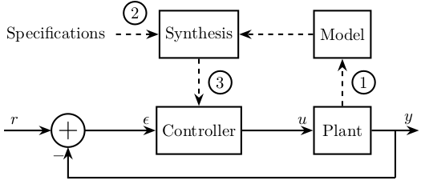
1.2 Control Procedure - Digital Synthesis
\begin{tikzpicture} \node[draw, fill=white, align=center, text width=2cm] (m_continu) at (0, 0) {Modèle continu}; \node[draw, fill=white, align=center, text width=2cm] (m_discret) at (6, 0) {Modèle discret}; \node[draw, fill=white, align=center, text width=2cm] (m_continu_eq) at (12, 0) {Modèle continu équivalent}; \node[draw, fill=white, align=center, text width=2cm] (c_continu_eq) at (12, -4) {Correcteur continu équivalent}; \node[draw, fill=white, align=center, text width=2cm] (c_discret) at (6, -4) {Correcteur discret}; \draw[->, dashed, postaction={decorate,decoration={raise=1ex,text along path,text align=center,text={Synthese de correcteur}}}, postaction={decorate,decoration={raise=-2.5ex,text along path,text align=center,text={numerique}}}] (m_continu) to[bend right] (c_discret); \draw[->] (m_continu) -- node[above]{Discrétisation}node[below]{bloqueur ordre 0} (m_discret); \draw[->] (m_discret) -- node[above]{Transformation}node[below]{bilinéaire} (m_continu_eq); \draw[->] (m_continu_eq) -- node[left, align=center, text width=2cm]{Synthèse continue} (c_continu_eq); \draw[->] (c_continu_eq) -- node[above]{Transformation}node[below]{inverse} (c_discret); \end{tikzpicture}
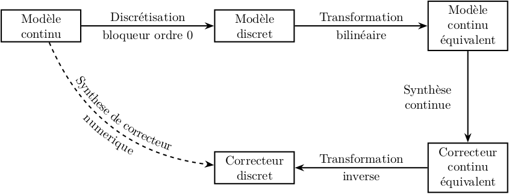
2 Classical Feedback
2.1 One Degree of Freedom
\begin{tikzpicture} \node[addb={+}{}{}{}{-}] (addfb) at (0, 0){}; \node[block, right=1 of addfb] (K){$K$}; \node[addb={+}{}{}{}{}, right=1 of K] (adddu){}; \node[block, right=1 of adddu] (G){$G$}; \node[addb={+}{}{}{}{}, right=1 of G] (adddy){}; \node[addb={+}{}{}{}{-}, above right=1 and 1 of adddy] (adderror) {}; \node[addb={+}{}{}{}{}, below right=1 and 1 of adddy] (addn) {}; \draw[->] (addfb.east) -- (K.west) node[above left]{$\epsilon_{m}$}; \draw[->] (K.east) -- (adddu.west); \draw[->] (adddu.east) -- (G.west) node[above left]{$u$}; \draw[->] (adderror.east) -- ++(0.8, 0) coordinate[](endpos) node[above left]{$\epsilon$}; \draw[->] (G.east) -- (adddy.west); \draw[->] (adddy.east) -- (G-|endpos) node[above left]{$y$}; \draw[<-] (addfb.west) -- ++(-1, 0) node[above right]{$r$}; \draw[->] (G-|adderror) node[branch]{} -- (addn.north); \draw[<-] (addn.east) -- (addn-|endpos) node[above left]{$n$}; \draw[->] (G-|adderror) -- (adderror.south); \draw[->] ($(addfb.west)+(-0.3, 0)$) node[branch]{} |- (adderror.west); \draw[->] (addn.west) -| (addfb.south) node[below right]{$y_m$}; \draw[<-] (adddu.north) -- ++(0, 0.8) node[below right]{$d_u$}; \draw[<-] (adddy.north) -- ++(0, 0.8) node[below right]{$d_y$}; \end{tikzpicture}

2.2 One Degree of Freedom
\begin{tikzpicture} \node[addb={+}{}{}{}{-}] (addfb) at (0, 0){}; \node[block, right=1 of addfb] (K){$K(s)$}; \node[addb={+}{}{}{}{}, right=1 of K] (adddu){}; \node[block, right=1 of adddu] (G){$G(s)$}; \node[addb={+}{}{}{}{}, below right=1 and 1 of G] (addn) {}; \draw[->] (addfb.east) -- (K.west) node[above left]{$\epsilon$}; \draw[->] (K.east) -- (adddu.west) node[above left]{$u$}; \draw[->] (adddu.east) -- (G.west) node[above left]{$u_r$}; \draw[<-] (addn.east) -- ++(0.8, 0) coordinate[](endpos) node[above left]{$n$}; \draw[->] (G.east) -- (G-|endpos) node[above left]{$y$}; \draw[<-] (addfb.west) -- ++(-1, 0) node[above right]{$r$}; \draw[->] (G-|addn) node[branch]{} -- (addn.north); \draw[->] (addn.west) -| (addfb.south) node[below right]{$y_m$}; \draw[<-] (adddu.north) -- ++(0, 0.8) node[below right]{$d$}; \end{tikzpicture}
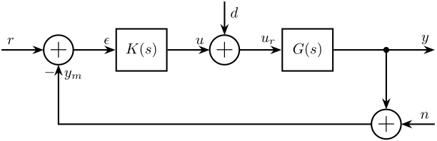
2.3 One Degree of Freedom - Alternative
\begin{tikzpicture} \node[addb={+}{}{}{}{-}] (addfb) at (0, 0){}; \node[block, right=1 of addfb] (K){$K$}; \node[block, right=1 of K] (G){$G$}; \node[addb={+}{}{}{}{}, right=1 of G] (adddy){}; \node[block, above=0.7 of adddy] (Gd){$G_d$}; \node[addb={+}{}{}{}{}, below right=1 and 1 of adddy] (addn) {}; \draw[<-] (addfb.west) -- ++(-0.8, 0) node[above right]{$r$}; \draw[->] (addfb.east) -- (K.west); \draw[->] (K.east) -- (G.west) node[above left]{$u$}; \draw[->] (G.east) -- (adddy.west); \draw[<-] (addn.east) -- ++(0.8, 0) coordinate[](endpos) node[above left]{$n$}; \draw[->] (adddy.east) -- (G-|endpos) node[above left]{$y$}; \draw[->] (G-|addn) node[branch]{} -- (addn.north); \draw[->] (addn.west) -| (addfb.south) node[below right]{$y_m$}; \draw[<-] (adddy.north) -- (Gd.south); \draw[<-] (Gd.north) -- ++(0, 0.7) node[below right]{$d$}; \end{tikzpicture}

2.4 One Degree of Freedom - Small
\begin{tikzpicture} \node[addb={+}{}{}{}{-}] (addfb) at (0, 0){}; \node[block, right=0.6 of addfb] (K){$K$}; \node[block, right=0.6 of K] (G){$G$}; \node[addb={+}{}{}{}{}, right=0.6 of G] (adddy){}; \node[addb={+}{}{}{}{}, below right=0.6 and 0.6 of adddy] (addn) {}; \draw[<-] (addfb.west) -- ++(-0.6, 0) node[above right]{$r$}; \draw[->] (addfb.east) -- (K.west); \draw[->] (K.east) -- (G.west) node[above left]{$u$}; \draw[->] (G.east) -- (adddy.west); \draw[<-] (addn.east) -- ++(0.6, 0) coordinate[](endpos) node[above left]{$n$}; \draw[->] (adddy.east) -- (G-|endpos) node[above left]{$y$}; \draw[->] (adddy-|addn) node[branch]{} -- (addn.north); \draw[->] (addn.west) -| (addfb.south) node[below right]{$y_m$}; \draw[<-] (adddy.north) -- ++(0, 0.6) node[below right]{$d$}; \end{tikzpicture}

2.5 One Degree of Freedom - Alternative bis
\begin{tikzpicture} \node[addb={+}{}{}{}{-}] (addfb) at (0, 0){}; \node[block, right=1 of addfb] (K){$K$}; \node[addb={+}{}{}{}{}, right=1 of K] (adddu){}; \node[block, right=1 of adddu] (G){$G$}; \node[addb={+}{}{}{}{}, right=1 of G] (adddy){}; \draw[->] (addfb.east) -- (K.west) node[above left]{$\epsilon_{m}$}; \draw[->] (K.east) -- (adddu.west) node[above left]{$u$}; \draw[->] (adddu.east) -- (G.west); \draw[->] (G.east) -- (adddy.west); \draw[->] (adddy.east) -- ++(1.5, 0) node[above left]{$y$}; \draw[->] ($(adddy.east)+(0.8, 0)$) node[branch]{} -- ++(0, -1) -| (addfb.south); \draw[<-] (addfb.west) -- ++(-1, 0) node[above right]{$r$}; \draw[<-] (adddu.north) -- ++(0, 1) node[below left]{$d_1$}; \draw[<-] (adddy.north) -- ++(0, 1) node[below left]{$d_2$}; \end{tikzpicture}

2.6 One Degree of Freedom - Check Stability
\begin{tikzpicture} \node[block] (K){$-K$}; \node[addb={+}{}{}{}{}, right=1 of K] (adddu){}; \node[block, below=1 of K] (G){$G$}; \node[addb={+}{}{}{}{}, left=1 of G] (adddy){}; \draw[->] (K.east) -- (adddu.west); \draw[->] (adddu|-G) node[branch]{} -- ++(0, -1) coordinate(botpos) node[above right]{$u$}; \draw[->] (adddu.south) |- (G.east); \draw[->] (G.west) -- (adddy.east); \draw[->] (adddy|-K) node[branch]{} -- ++(0, 1) coordinate(toppos) node[below left]{$y$}; \draw[->] (adddy.north) |- (K.west); \draw[<-] (adddu.north) -- (adddu|-toppos) node[below right]{$d_u$}; \draw[<-] (adddy.south) -- (adddy|-botpos) node[above left]{$d_y$}; \end{tikzpicture}
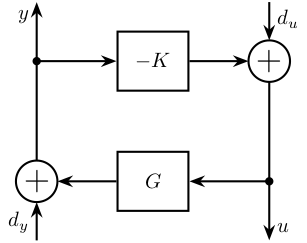
2.7 One Degree of Freedom - Measurement transfer function
\begin{tikzpicture} \node[addb={+}{}{}{}{-}] (addfb) at (0, 0){}; \node[block, right=1 of addfb] (K){$K$}; \node[block, right=1 of K] (G){$G$}; \node[addb={+}{}{}{}{}, right=1 of G] (adddy){}; \node[block, above=0.7 of adddy] (Gd){$G_d$}; \node[addb={+}{}{}{}{}, below right=1 and 1 of adddy] (addn) {}; \node[block] (Gm) at (G|-addn) {$G_m$}; \draw[<-] (addfb.west) -- ++(-0.8, 0) node[above right]{$r$}; \draw[->] (addfb.east) -- (K.west); \draw[->] (K.east) -- (G.west) node[above left]{$u$}; \draw[->] (G.east) -- (adddy.west); \draw[<-] (addn.east) -- ++(0.8, 0) coordinate[](endpos) node[above left]{$n$}; \draw[->] (adddy.east) -- (G-|endpos) node[above left]{$y$}; \draw[->] (G-|addn) node[branch]{} -- (addn.north); \draw[->] (addn.west) -- (Gm.east); \draw[->] (Gm.west) -| (addfb.south); \draw[<-] (adddy.north) -- (Gd.south); \draw[<-] (Gd.north) -- ++(0, 0.7) node[below right]{$d$}; \end{tikzpicture}

2.8 Two Degrees of Freedom
\begin{tikzpicture} \node[block={1cm}{1.5cm}] (K) {$K$}; \node[block, right=1 of K] (G) {$G$}; \node[addb, right=1 of G] (addy) {}; \node[addb, below right=0.7 and 1 of addy] (addn) {}; % Inputs of the controllers \coordinate[] (inputr) at ($(K.south west)!0.75!(K.north west)$); \coordinate[] (inputy) at ($(K.south west)!0.25!(K.north west)$); % Connections and labels \draw[<-] (inputr) -- ++(-0.8, 0) node[above right]{$r$}; \draw[->] (K.east) -- (G.west) node[above left]{$u$}; \draw[->] (G.east) -- (addy.west); \draw[->] (addn.west) -| ($(inputy) - (0.8, 0)$) -- (inputy) node[above left]{$y_m$}; \draw[->] (addy.east) -| (addn.north) node[above right]{$y$}; \draw[<-] (addy.north) -- ++(0, 0.8) node[below right]{$d$}; \draw[<-] (addn.east) -- ++(0.8, 0) node[above left]{$n$}; \end{tikzpicture}

2.9 Two Degrees of Freedom - Alternative
\begin{tikzpicture} \node[block={1.5cm}{1cm}] (K) {$K$}; \node[block, right=1 of K] (G) {$G$}; \node[addb, right=1 of G] (adddy) {}; \node[block, above=0.7 of adddy] (Gd){$G_d$}; \node[addb, below right=0.7 and 1 of adddy] (addn) {}; % Inputs of the controllers \coordinate[] (inputr) at ($(K.south west)!0.75!(K.north west)$); \coordinate[] (inputy) at ($(K.south west)!0.25!(K.north west)$); % Connections and labels \draw[<-] (inputr) -- ++(-0.8, 0) node[above right]{$r$}; \draw[->] (K.east) -- (G.west) node[above left]{$u$}; \draw[->] (G.east) -- (adddy.west); \draw[->] (addn.west) -| ($(inputy) - (0.8, 0)$) -- (inputy) node[above left]{$y_m$}; \draw[->] (adddy.east) -| (addn.north) node[above right]{$y$}; \draw[<-] (adddy.north) -- (Gd.south); \draw[<-] (Gd.north) -- ++(0, 0.7) node[below right]{$d$}; \draw[<-] (addn.east) -- ++(0.8, 0) node[above left]{$n$}; \end{tikzpicture}
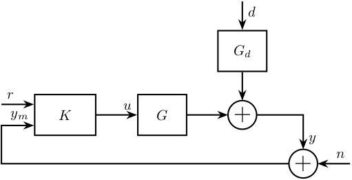
2.10 Two Degrees of Freedom - Simple
\begin{tikzpicture} \node[block={1.5cm}{1cm}] (K) {$K$}; \node[block, right=0.6 of K] (G) {$G$}; % Inputs of the controllers \coordinate[] (inputr) at ($(K.south west)!0.75!(K.north west)$); \coordinate[] (inputy) at ($(K.south west)!0.25!(K.north west)$); % Connections and labels \draw[<-] (inputr) -- ++(-0.8, 0) node[above right]{$r$}; \draw[->] (K.east) -- (G.west) node[above left]{$u$}; \draw[->] (G.east) -| ++(1, -1) -| ($(inputy) - (0.8, 0)$) node[above right]{$y$} -- (inputy); \end{tikzpicture}

2.11 Two Degrees of Freedom - separated
\begin{tikzpicture} \node[block] (Kr) at (0, 0){$K_r$}; \node[addb={+}{}{}{}{-}, right=1 of Kr] (addfb){}; \node[block, right=1 of addfb] (K){$K_y$}; \node[block, right=1 of K] (G){$G$}; \node[addb={+}{}{}{}{}, right=1 of G] (adddy){}; \node[block, above=0.7 of adddy] (Gd){$G_d$}; \node[addb={+}{}{}{}{}, below right=1 and 1 of adddy] (addn) {}; \draw[<-] (Kr.west) -- ++(-0.8, 0) node[above right]{$r$}; \draw[->] (Kr.east) -- (addfb.west); \draw[->] (addfb.east) -- (K.west); \draw[->] (K.east) -- (G.west) node[above left]{$u$}; \draw[->] (G.east) -- (adddy.west); \draw[<-] (addn.east) -- ++(0.8, 0) coordinate[](endpos) node[above left]{$n$}; \draw[->] (adddy.east) -- (G-|endpos) node[above left]{$y$}; \draw[->] (G-|addn) node[branch]{} -- (addn.north); \draw[->] (addn.west) -| (addfb.south) node[below right]{$y_m$}; \draw[<-] (adddy.north) -- (Gd.south); \draw[<-] (Gd.north) -- ++(0, 0.7) node[below right]{$d_y$}; \end{tikzpicture}

2.12 One Degree of freedom with ADC and DAC
\begin{tikzpicture} \node[addb={+}{}{}{}{-}] (addfb) {}; \node[block, right=1 of addfb] (K) {$K$}; \node[DAC, right=1 of K] (DAC) {DAC}; \node[block, right=1 of DAC] (G) {$G$}; \node[addb, right=1 of G] (addy) {}; \node[addb, below right=1 of addy] (addn) {}; \node[ADC, left=1 of addn] (ADC) {ADC}; % Connections and labels \draw[->] (K.east) -- node[sloped]{$/$}(DAC.west); \draw[->] (DAC.east) -- (G.west) node[above left]{$u$}; \draw[->] (G.east) -- (addy.west); \draw[->] (addy.east) -| (addn.north) node[above right]{$y$}; \draw[<-] (addy.north) -- ++(0, 0.8) node[below right]{$d$}; \draw[<-] (addn.east) -- ++(0.8, 0) node[above left]{$n$}; \draw[->] (addn.west) -- (ADC.east); \draw[->] (ADC.west) -| node[near start, sloped]{$/$} (addfb.south) node[below right]{$y_m$}; \draw[->] (addfb.east) -- node[sloped]{$/$} (K.west) node[above left]{$\epsilon_m$}; \draw[<-] (addfb.west) -- node[sloped]{$/$} ++(-1, 0) node[above right]{$r$}; \end{tikzpicture}

3 Feedforward
3.1 Simple Adaptive feedforward
\begin{tikzpicture} \node[block={2.0cm}{2.0cm}] (P) {$P$}; \node[above] at (P.north) {System}; \node[block={2.0cm}{1.0cm}, below=1 of P, align=center, opacity=0] (Kinv) {Adaptive\\Filter}; \draw[->] ($(Kinv.south west) + (0, -0.3)$) -- ($(Kinv.north east) + (0, 0.3)$); \node[block={2.0cm}{1.0cm}, below=1 of P, align=center] (K) {Adaptive\\Filter}; % Input and outputs coordinates \coordinate[] (inputa) at ($(P.south west)!0.75!(P.north west)$); \coordinate[] (inputb) at ($(P.south west)!0.25!(P.north west)$); % Connections and labels \draw[<-] (inputa) -- ++(-1.5, 0) coordinate(d) node[above right]{$d$}; \draw[->] ($(d)+(0.5, 0)$)node[branch]{} |- (K.west); \draw[->] (P.east) -- ++(1, 0) coordinate(e) node[above left]{$\epsilon$}; \draw[->] ($(e)+(-0.5, 0)$)node[branch]{} |- (K.east); \draw[<-] (inputb) -- ++(-0.5, 0) -- ++(0, -1) -| (K.north); \end{tikzpicture}

4 General Control Configuration
4.1 Generalized Plant
\begin{tikzpicture} \node[block={2.0cm}{2.0cm}] (P) {$P$}; \node[above] at (P.north) {Generalized Plant}; % Input and outputs coordinates \coordinate[] (inputw) at ($(P.south west)!0.75!(P.north west)$); \coordinate[] (inputu) at ($(P.south west)!0.25!(P.north west)$); \coordinate[] (outputz) at ($(P.south east)!0.75!(P.north east)$); \coordinate[] (outputv) at ($(P.south east)!0.25!(P.north east)$); % Connections and labels \draw[<-] (inputw) -- ++(-0.8, 0) node[above right]{$w$}; \draw[<-] (inputu) -- ++(-0.8, 0) node[above right]{$u$}; \draw[->] (outputz) -- ++(0.8, 0) node[above left]{$z$}; \draw[->] (outputv) -- ++(0.8, 0) node[above left]{$v$}; \end{tikzpicture}
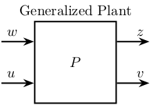
4.2 General Control configuration
\begin{tikzpicture} % Blocs \node[block={2.0cm}{2.0cm}] (P) {$P$}; \node[above] at (P.north) {Generalized Plant}; \node[block={1.5cm}{1.5cm}, below=0.7 of P] (K) {$K$}; % Input and outputs coordinates \coordinate[] (inputw) at ($(P.south west)!0.75!(P.north west)$); \coordinate[] (inputu) at ($(P.south west)!0.25!(P.north west)$); \coordinate[] (outputz) at ($(P.south east)!0.75!(P.north east)$); \coordinate[] (outputv) at ($(P.south east)!0.25!(P.north east)$); % Connections and labels \draw[<-] (inputw) node[above left]{$w$} -- ++(-0.8, 0); \draw[<-] (inputu) node[above left]{$u$} -- ++(-0.8, 0) |- (K.west); \draw[->] (outputz) node[above right]{$z$} -- ++(0.8, 0); \draw[->] (outputv) node[above right]{$v$} -- ++(0.8, 0) |- (K.east); \end{tikzpicture}
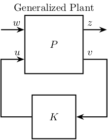
4.3 General Control configuration - Names
\begin{tikzpicture} % Blocs \node[block={2.0cm}{2.0cm}] (P) {$P$}; \node[block={1.5cm}{1.5cm}, below=0.7 of P] (K) {$K$}; % Input and outputs coordinates \coordinate[] (inputw) at ($(P.south west)!0.75!(P.north west)$); \coordinate[] (inputu) at ($(P.south west)!0.25!(P.north west)$); \coordinate[] (outputz) at ($(P.south east)!0.75!(P.north east)$); \coordinate[] (outputv) at ($(P.south east)!0.25!(P.north east)$); % Connections and labels \draw[<-] (inputw) node[above left, align=right]{(weighted)\\exogenous inputs\\$w$} -- ++(-1.5, 0); \draw[<-] (inputu) -- ++(-0.8, 0) |- node[left, near start, align=right]{control signals\\$u$} (K.west); \draw[->] (outputz) node[above right, align=left]{(weighted)\\exogenous outputs\\$z$} -- ++(1.5, 0); \draw[->] (outputv) -- ++(0.8, 0) |- node[right, near start, align=left]{sensed output\\$v$} (K.east); \end{tikzpicture}
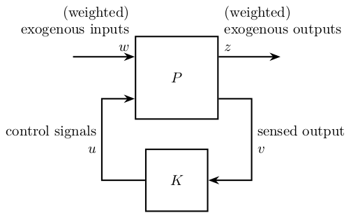
4.4 General Control Configuration - Diagonal Control
\begin{tikzpicture} % Blocs \node[block={3cm}{2cm}] (P) {P}; \node[block={3cm}{2cm}, below=1 of P, scale=0.8] (K) {\[% \begin{pmatrix} K_{T_x} & 0 & \cdots & 0 \\ 0 & \ddots & \ddots & \vdots \\ \vdots & \ddots & \ddots & 0 \\ 0 & \cdots & 0 & K_{\theta_z} \\ \end{pmatrix} \]}; % Block names \node[above] at (P.north) {End Station}; \node[above] at (K.north) {Controller}; % Input and outputs coordinates \coordinate[] (inputw) at ($(P.south west)!0.75!(P.north west)$); \coordinate[] (inputu) at ($(P.south west)!0.25!(P.north west)$); \coordinate[] (outputz) at ($(P.south east)!0.75!(P.north east)$); \coordinate[] (outputv) at ($(P.south east)!0.25!(P.north east)$); % Connections and labels \draw[<-] (inputw) node[above left]{$w$} -- ++(-0.8, 0); \draw[<-] (inputu) node[above left]{$F$} -- ++(-0.8, 0) |- (K.west); \draw[->] (outputz) node[above right]{$z$} -- ++(0.8, 0); \draw[->] (outputv) node[above right]{$d$} -- ++(0.8, 0) |- (K.east); \end{tikzpicture}
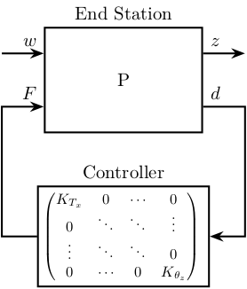
4.5 General Control Configuration - 1DoF Feedback
\begin{tikzpicture} % Blocs \node[block] (G) {$G$}; \node[addb, right=1 of G] (addy) {}; \node[block, above=0.5 of addy] (Gd) {$G_d$}; \node[addb, right=1 of addy] (addn) {}; % Inputs \coordinate[above left=2.2 and 1.2 of G] (d); \coordinate[above=1 of d] (n); % Outputs \coordinate[above right=2.2 and 1.2 of addn] (y); \coordinate[above=1 of y] (F); \coordinate (u) at (n|-G); \coordinate (v) at (F|-G); \node[fit={($(n) + (0.5, 0.2)$) ($(v|-G.south) - (0.5, 0.2)$)}, inner sep=0pt, draw, dashed, color=gray, label={Generalized Plant}] (P) {}; \node[draw, block, below=1 of P] (K) {$K$}; % Connections \draw[->] (G.east) -- (addy.west); \draw[->] (addy.east) -- (addn.west); \draw[->] (Gd.south) -- (addy.north); \draw[<-] (addn.north) -- ++(0, 0.5); \draw[->] (d) -| (Gd.north); \draw[->] (n) -| (addn.north); \draw[->] ($(addn.west) + (-0.4, 0)$)node[branch]{} |- (y); \draw[->] ($(G.west) + (-0.4, 0)$)node[branch]{} |- (F); \draw[->] (addn.east) -- (v) |- (K.east); \draw[->] (K.west) -| (u) -- (G.west); % Labels \node[above right] (un) at (u) {$u$}; \node[above left] (vn) at (v) {$v$}; \node[above right] (dn) at (d) {$d$}; \node[above right] (nn) at (n) {$n$}; \node[above left] (yn) at (y) {$y$}; \node[above left] (Fn) at (F) {$u$}; \draw [decoration={brace, raise=7pt}, decorate] (dn.south west) -- node[left=8pt]{$w$} (nn.north west); \draw [decoration={brace, mirror, raise=5pt}, decorate] (yn.south east) -- node[right=6pt]{$z$} (Fn.north east); \end{tikzpicture}

4.6 Weighted General Control Configuration
\begin{tikzpicture} % Blocs \node[block={2.0cm}{2.0cm}] (P) {$\tilde{P}$}; \node[block={1.5cm}{1.5cm}, below=0.7 of P] (K) {$K$}; % Input and outputs coordinates \coordinate[] (inputw) at ($(P.south west)!0.75!(P.north west)$); \coordinate[] (inputu) at ($(P.south west)!0.25!(P.north west)$); \coordinate[] (outputz) at ($(P.south east)!0.75!(P.north east)$); \coordinate[] (outputv) at ($(P.south east)!0.25!(P.north east)$); % Weights \node[block, right=0.7 of outputz] (Wz) {$W_z$}; \node[block, left =0.7 of inputw] (Ww) {$W_w$}; % Connections and labels \draw[<-] (Ww.west) -- ++(-1, 0) node[above right](w){$w$}; \draw[->] (Ww.east) -- (inputw) node[above left]{$\tilde{w}$}; \draw[<-] (inputu) -- (w|-inputu) |- node[left, near start]{$u$} (K.west); \draw[->] (outputz) -- (Wz.west) node[above left]{$\tilde{z}$}; \draw[->] (Wz.east) -- ++(1, 0) node[above left](z){$z$}; \draw[->] (outputv) -- (z|-outputv) |- node[right, near start](v){$v$} (K.east); % Weighted plant \node[fit={($(Ww.north west) + (-0.4, 0.2)$) ($(Wz.east|-P.south) + (0.4, -0.2)$)}, inner sep=0pt, draw, dashed, color=gray, label={Generalized Weighted Plant $P$}] (P) {}; \end{tikzpicture}
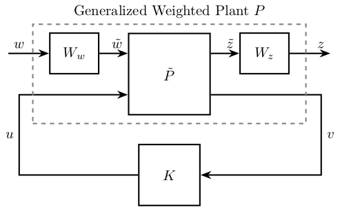
4.7 General Control Configuration - Weighted 1DoF Feedback
\begin{tikzpicture} % Blocs \node[block] (G) {$G$}; \node[addb, right=1 of G] (addy) {}; \node[block, above=0.5 of addy] (Gd) {$G_d$}; \node[block, above=2.0 of G] (Wd) {$W_d$}; \node[block, above=0.5 of Wd] (Wn) {$W_n$}; \node[addb, right=1 of addy] (addn) {}; \node[block, above right=1.5 and 0.2 of addn] (Wu) {${W_u}^{-1}$}; \node[block, above=0.5 of Wu] (We) {${W_e}^{-1}$}; % Inputs \coordinate[left=1.2 of Wd] (d); \coordinate[left=1.2 of Wn] (n); % Outputs \coordinate[right=1.2 of We] (y); \coordinate[right=1.2 of Wu] (F); \coordinate (u) at (n|-G); \coordinate (v) at (F|-G); \node[fit={($(n) + (0, 0.5) + (0.5, 0.2)$) ($(v|-G.south) - (0.5, 0.2)$)}, inner sep=0pt, draw, dashed, color=gray, label={Generalized Weighted Plant $P$}] (P) {}; \node[block={1.5cm}{1.5cm}, below=0.7 of P] (K) {$K$}; % Connections \draw[->] (G.east) -- (addy.west); \draw[->] (addy.east) -- (addn.west); \draw[->] (Gd.south) -- (addy.north); \draw[<-] (addn.north) -- ++(0, 0.5); \draw[->] (d) -- (Wd.west); \draw[->] (Wd.east) node[above right]{$\tilde{d}$} -| (Gd.north); \draw[->] (n) -- (Wn.west); \draw[->] (Wn.east) node[above right]{$\tilde{n}$} -| (addn.north); \draw[->] ($(addn.west) + (-0.4, 0)$) node[branch]{} |- (We.west) node[above left]{$\tilde{y}$}; \draw[->] ($(G.west) + (-0.4, 0)$) node[branch]{} |- (Wu.west) node[above left]{$\tilde{u}$}; \draw[->] (We.east) -- (y); \draw[->] (Wu) -- (F); \draw[->] (addn.east) -- (v) |- (K.east); \draw[->] (K.west) -| (u) -- (G.west); % Labels \node[above right] (un) at (u) {$u$}; \node[above left] (vn) at (v) {$v$}; \node[above right] (dn) at (d) {$d$}; \node[above right] (nn) at (n) {$n$}; \node[above left] (yn) at (y) {$y$}; \node[above left] (Fn) at (F) {$u$}; % W and Z brackets \draw [decoration={brace, raise=7pt}, decorate] (dn.south west) -- node[left=8pt]{$w$} (nn.north west); \draw [decoration={brace, raise=5pt}, decorate] (yn.north east) -- node[right=6pt]{$z$} (Fn.south east); \end{tikzpicture}

4.8 Uncertainty block
\begin{tikzpicture} % Blocs \node[block={2.0cm}{2.0cm}] (P) {$P$}; \node[block={1.5cm}{1.2cm}, below=0.7 of P] (K) {$K$}; \node[block={1.5cm}{1.2cm}, above=0.7 of P] (delta) {$\Delta$}; % Input and outputs coordinates \coordinate[] (inputudelta) at ($(P.north west)!0.25!(P.south west)$); \coordinate[] (inputw) at ($(P.north west)!0.50!(P.south west)$); \coordinate[] (inputu) at ($(P.north west)!0.75!(P.south west)$); \coordinate[] (outputydelta) at ($(P.north east)!0.25!(P.south east)$); \coordinate[] (outputz) at ($(P.north east)!0.50!(P.south east)$); \coordinate[] (outputv) at ($(P.north east)!0.75!(P.south east)$); % Connections and labels \draw[<-] (inputw) -- ++(-1.0, 0) node[above left]{$w$}; \draw[<-] (inputu) -- ++(-0.8, 0) |- node[near start, left]{$u$} (K.west); \draw[<-] (inputudelta) -- ++(-0.8, 0) |- node[near start, left]{$u_\Delta$} (delta.west); \draw[->] (outputz) -- ++(1.0, 0) node[above right]{$z$}; \draw[->] (outputv) -- ++(0.8, 0) |- node[near start, right]{$v$} (K.east); \draw[->] (outputydelta) -- ++(0.8, 0) |- node[near start, right]{$y_\Delta$} (delta.east); \end{tikzpicture}

4.9 Uncertainty block - NDelta configuration
\begin{tikzpicture} % Blocs \node[block={2.0cm}{2.0cm}] (P) {$N$}; \node[block={1.5cm}{1.2cm}, above=0.7 of P] (delta) {$\Delta$}; % Input and outputs coordinates \coordinate[] (inputudelta) at ($(P.north west)!0.25!(P.south west)$); \coordinate[] (inputw) at ($(P.north west)!0.75!(P.south west)$); \coordinate[] (outputydelta) at ($(P.north east)!0.25!(P.south east)$); \coordinate[] (outputz) at ($(P.north east)!0.75!(P.south east)$); % Connections and labels \draw[<-] (inputw) -- ++(-1.0, 0) node[above left]{$w$}; \draw[<-] (inputudelta) -- ++(-0.8, 0) |- node[near start, left]{$u_\Delta$} (delta.west); \draw[->] (outputz) -- ++(1.0, 0) node[above right]{$z$}; \draw[->] (outputydelta) -- ++(0.8, 0) |- node[near start, right]{$y_\Delta$} (delta.east); \end{tikzpicture}

4.10 M Delta Analysis
\begin{tikzpicture} % Blocs \node[block={1.5cm}{1.2cm}] (M) {$M$}; \node[block={1.5cm}{1.2cm}, above=0.7 of M] (delta) {$\Delta$}; % Connections and labels \draw[<-] (M.west) -- ++(-1.5, 0) |- node[near start, left ]{$u_\Delta$} (delta.west); \draw[->] (M.east) -- ++( 1.5, 0) |- node[near start, right]{$y_\Delta$} (delta.east); \end{tikzpicture}

5 Control Architectures
5.1 PID
\begin{tikzpicture} % Blocs \node[block] (KP) {$K_P$}; \node[block, above=0.7 of KP] (KD) {$K_D$}; \node[block, below=0.7 of KP] (KI) {$K_I$}; \node[block, right=1 of KD] (deriv) {$\frac{d\hphantom{t}}{dt}$}; \node[block, right=1 of KI] (int) {$\int$}; \node[addb, right=2.5 of KP] (add) {}; \node[branch, left=1 of KP] (connect) {}; % Connections and labels \draw[->] (KD.east) -- (deriv); \draw[->] (KI.east) -- (int); \draw[->] (deriv) -| (add); \draw[->] (KP) -- (add); \draw[->] (int) -| (add); \draw[->] (connect) |- (KD); \draw[->] (connect) -- (KP); \draw[->] (connect) |- (KI); \draw[->] (add.east) -- ++(0.8, 0) node[above left]{$u$}; \draw[] (connect.west) -- ++(-0.8, 0) node[above right]{$\epsilon$}; \end{tikzpicture}

6 Input Output Uncertainty
6.1 Input and output uncertainty
\begin{tikzpicture} % Blocs \node[block] (G) {$G$}; \node[branch, right=1 of G] (Bo) {}; \node[block, above right=0.7 and 0.7 of Bo] (Eo) {$E_O$}; \node[addb, right=3.5 of G] (addo) {}; \node[addb, left=1 of G] (addi) {}; \node[block, below left=0.7 and 0.7 of addi] (Ei) {$E_I$}; \node[branch, left=2.5 of addi] (Bi) {}; % Connections and labels \draw[->] (Bi.center) |- (Ei.west); \draw[->] (Ei.east) -| (addi.south); \draw[->] ($(Bi)+(-0.5, 0)$) -- (addi.west); \draw[->] (addi.east) -- (G.west); \draw[->] (G.east) -- (addo.west); \draw[->] (Bo.center) |- (Eo.west); \draw[->] (Eo.east) -| (addo.north); \draw[->] (addo.east) -- ++(0.5, 0); \end{tikzpicture}
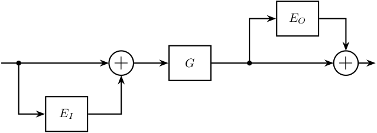
6.2 Input Multiplicative Uncertainty - Feedback
\begin{tikzpicture} % Blocs \node[block] (G) {$G$}; \node[addb, left=1 of G] (addi) {}; \node[block, above left=0.7 and 0.4 of addi] (deltai) {$\Delta_I$}; \node[block, left=0.7 of deltai] (wi) {$w_I$}; \node[block, left=6.8 of G] (K){$K$}; \node[addb={+}{}{}{}{-}, left=1 of K] (addfb){}; % Connections and labels \draw[->] (addfb.east )-- (K.west); \draw[->] (K.east )-- (addi.west); \draw[->] ($(K.east)+(1.0, 0)$)coordinate[](start) node[branch]{} |- (wi.west); \draw[->] (wi.east) -- (deltai.west); \draw[->] (deltai.east) -| (addi.north); \draw[->] (addi.east) -- (G.west); \draw[->] (G.east) -- ++(1.5, 0); \draw[->] ($(G.east)+(0.8, 0)$) node[branch]{} -- ++(0, -1.5) -| (addfb.south); \draw[<-] (addfb.west) -- ++(-0.8, 0); \node[fit={($(wi.north west)+(-0.8, 0)$) (G.south east)}, inner sep=10pt, draw, dashed, color=gray, label={$G_p$}] (Gp) {}; \end{tikzpicture}

6.3 Input Multiplicative Uncertainty - Feedback - weight
\begin{tikzpicture} % Blocs \node[block] (G) {$G$}; \node[addb, left=0.5 of G] (addi) {}; \node[block, above left=0.4 and 0.4 of addi] (deltai) {$\Delta_I$}; \node[block, left=0.5 of deltai] (wi) {$W_I$}; \node[block, left=5.4 of G] (K){$K$}; % \node[addb={+}{}{}{}{-}, left=0.5 of K] (addfb){}; \coordinate[left=0.5 of K] (fb){}; \node[addb, right=0.8 of G] (addw){}; \node[block, right=0.8 of addw] (Wp){$W_p$}; % Connections and labels % \draw[->] (addfb.east )-- (K.west); \draw[->] (K.east )-- (addi.west); \draw[->] ($(K.east)+(0.5, 0)$)coordinate[](start) node[branch]{} node[above right]{$u$} |- (wi.west); \draw[->] (wi.east) -- node[midway, above]{$y_\Delta$} (deltai.west); \draw[->] (deltai.east)node[above right]{$u_\Delta$} -| (addi.north); \draw[->] (addi.east) -- (G.west); \draw[->] (G.east) -- (addw.west); \draw[->] (addw.east) -- (Wp.west); \draw[<-] (addw.north) -- ++(0, 0.6) node[below right]{$w$}; \draw[->] (Wp.east) -- ++(0.6, 0) node[above left]{$z$}; \draw[->] ($(addw.east)+(0.3, 0)$) node[branch]{} -- ++(0, -1.1) -| (fb) -- (K.west)node[above left]{$-$}node[below left]{$v$}; % \draw[<-] (addfb.west) -- ++(-0.6, 0); \node[fit={($(wi.north west)+(-0.4, 0)$) (G.south east)}, inner sep=8pt, draw, dashed, color=gray, label={$G_p$}] (Gp) {}; \end{tikzpicture}

6.4 Input Multiplicative Uncertainty - Feedback - weight - bis
\begin{tikzpicture} % Blocs \node[block] (G) {$G$}; \node[addb, left=0.5 of G] (addi) {}; \node[block, above left=0.4 and 0.2 of addi] (deltai) {$\Delta_I$}; \node[block, left=0.5 of deltai] (wi) {$W_I$}; \node[block, left=5.2 of G] (K){$K$}; \coordinate[left=0.5 of K] (fb){}; \node[addb, right=0.5 of G] (addw){}; \node[block, right=0.8 of addw] (Wp){$W_p$}; % Connections and labels \draw[->] (K.east )-- (addi.west); \draw[->] ($(K.east)+(0.5, 0)$)coordinate[](start) |- (wi.west); \draw[->] (wi.east) -- (deltai.west); \draw[->] (deltai.east) -| (addi.north); \draw[->] (addi.east) -- (G.west); \draw[->] (G.east) -- (addw.west); \draw[->] (addw.east) -- (Wp.west); \draw[<-] (addw.north) -- ++(0, 0.6) node[below right]{$d$}; \draw[->] (Wp.east) -- ++(0.6, 0) node[above left]{$\hat{y}$}; \draw[->] ($(addw.east)+(0.3, 0)$) node[branch]{} -- ++(0, -1.1) -| (fb) -- (K.west)node[above left]{$-$}; \node[fit={($(wi.north west)+(-0.4, 0)$) (G.south east)}, inner sep=5pt, draw, dashed, color=gray, label={$G_p$}] (Gp) {}; \end{tikzpicture}

6.5 Inverse Multiplicative Uncertainty - Feedback
\begin{tikzpicture} % Blocs \node[block] (G) {$G$}; \node[branch, left=1 of G] (branch) {}; \node[block, above left=0.7 and 0.7 of branch] (deltai) {$\Delta_{iI}$}; \node[block, left=0.7 of deltai] (wi) {$w_{iI}$}; \node[addb, left=4 of branch] (addu) {}; \node[block, left=1 of addu] (K) {$K$}; \node[addb={+}{}{}{}{-}, left=1 of K] (addfb) {}; \coordinate[] (end) at ($(G.east)+(0.7, 0)$); % Connections and labels \draw[->] (addu.east) -- (G.west); \draw[<-] (addu.north) |- (wi.west); \draw[<-] (wi.east) node[above right]{$u_\Delta$} -- (deltai.west); \draw[<-] (deltai.east) node[above right]{$y_\Delta$} -| (branch); \draw[->] (G.east) -- ++(1.5, 0); \draw[->] (end)node[branch]{} -- ++(0, -1.3) -| (addfb.south); \draw[->] (addfb.east) -- (K.west); \draw[->] (K.east) -- (addu.west); \draw[<-] (addfb.west) -- ++(-0.8, 0); \node[fit={(addu.west|-G.south) (G.east|-deltai.north)}, inner sep=10pt, draw, dashed, color=gray] (Gp) {}; \end{tikzpicture}

6.6 Six types of uncertainty
6.6.1 Additive Uncertainty
\begin{tikzpicture} \node[block] (G) {$G$}; \node[branch] at (-2.5, 0) (branch) {}; \node[addb] at ( 2.5, 0) (add) {}; \node[block, above left=0.7 and 0.1 of G] (wa) {$w_A$}; \node[block, above right=0.7 and 0.1 of G] (da) {$\Delta_A$}; % Connections and labels \draw[->] ($(branch)+(-1, 0)$) -- (G.west); \draw[->] (G.east) -- (add.west); \draw[->] (add.east) -- ++(1, 0); \draw[->] (branch) |- (wa.west); \draw[->] (wa.east) -- (da.west); \draw[->] (da.east) -| (add.north); \node[fit={(branch|-wa.north) (add.east|-G.south)}, inner sep=10pt, draw, dashed, color=gray, label={$G_p$}] (Gp) {}; \end{tikzpicture}

6.6.2 Input Multiplicative Uncertainty
\begin{tikzpicture} % Blocs \node[block] (G) {$G$}; \node[addb, left=0.75 of G] (addi) {}; \node[block, above left=0.7 and 0.2 of addi] (deltai) {$\Delta_I$}; \node[block, left=0.75 of deltai] (wi) {$w_I$}; % Connections and labels \draw[->] ($(G.west)+(-5.2, 0)$)coordinate[](start) node[branch]{} |- (wi.west); \draw[->] ($(start)+(-0.75, 0)$) -- (addi.west); \draw[->] (wi.east) -- (deltai.west); \draw[->] (deltai.east) -| (addi.north); \draw[->] (addi.east) -- (G.west); \draw[->] (G.east) -- ++(0.75, 0); \node[fit={(start|-wi.north) (G.south east)}, inner sep=10pt, draw, dashed, color=gray, label={$G_p$}] (Gp) {}; \end{tikzpicture}

6.6.3 Output Multiplicative Uncertainty
\begin{tikzpicture} % Blocs \node[block] (G) {$G$}; \node[branch, right=0.5 of G] (branch) {}; \node[block, above right=0.7 and 1.2 of G] (wo) {$w_{O}$}; \node[block, right=0.7 of wo] (do) {$\Delta_{O}$}; \node[addb] at (5.5, 0) (addo) {}; % Connections and labels \draw[<-] (G.west) -- ++(-1, 0); \draw[->] (G.east) -- (addo.west); \draw[->] (addo.east) -- ++(1, 0); \draw[->] (branch) |- (wo.west); \draw[->] (wo.east) -- (do.west); \draw[->] (do.east) -| (addo.north); \node[fit={(G.south west) (addo.east|-do.north)}, inner sep=10pt, draw, dashed, color=gray, label={$G_p$}] (Gp) {}; \end{tikzpicture}
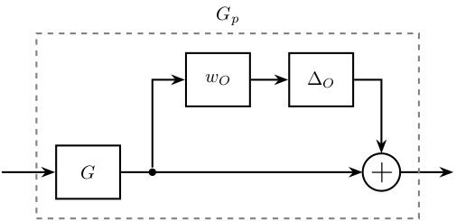
6.6.4 Inverse Additive Uncertainty
\begin{tikzpicture} \node[block] (G) {$G$}; \node[branch] at ( 2.5, 0) (branch) {}; \node[addb] at (-2.5, 0) (add) {}; \node[block, above right=0.7 and 0.1 of G] (wia) {$W_{iA}$}; \node[block, above left=0.7 and 0.1 of G] (dia) {$\Delta_{iA}$}; % Connections and labels \draw[<-] (add.west) -- ++(-1, 0); \draw[->] (add.east) -- (G.west); \draw[->] (G.east) -- ($(branch)+(1, 0)$); \draw[->] (branch) |- (wia.east); \draw[->] (wia.west) -- (dia.east); \draw[->] (dia.west) -| (add.north); \node[fit={(add.west|-G.south) (branch|-wia.north)}, inner sep=10pt, draw, dashed, color=gray, label={$G_p$}] (Gp) {}; \end{tikzpicture}
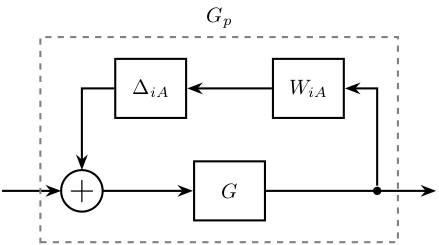
6.6.5 Inverse Multiplicative Input Uncertainty
\begin{tikzpicture} % Blocs \node[block] (G) {$G$}; \node[branch, left=0.5 of G] (branch) {}; \node[block, above left=0.7 and 1.0 of G] (deltai) {$\Delta_{iI}$}; \node[block, left=1 of deltai] (wi) {$w_{iI}$}; \node[addb] (add) at (-5.5, 0) {}; % Connections and labels \draw[<-] (add.west) -- ++(-1, 0); \draw[->] (add.east) -- (G.west); \draw[->] (G.east) -- ++(1, 0); \draw[->] (branch) |- (deltai.east); \draw[->] (deltai.west) -- (wi.east); \draw[->] (wi.west) -| (add.north); \node[fit={(add.west|-G.south) (G.east|-deltai.north)}, inner sep=10pt, draw, dashed, color=gray, label={$G_p$}] (Gp) {}; \end{tikzpicture}
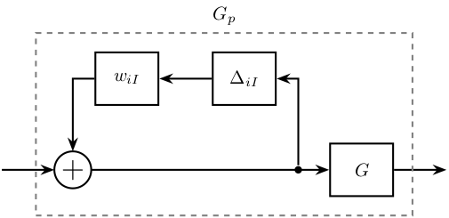
6.6.6 Inverse Multiplicative Output Uncertainty
\begin{tikzpicture} % Blocs \node[block] (G) {$G$}; \node[addb, right=1 of G] (add) {}; \node[block, above right=0.7 and 0.5 of add] (wi) {$w_{iO}$}; \node[block, right=0.7 of wi] (deltai) {$\Delta_{iO}$}; \node[branch] (branch) at (6.5, 0) {}; % Connections and labels \draw[<-] (G.west) -- ++(-1, 0); \draw[->] (G.east) -- (add.west); \draw[->] (add.east) -- ($(branch)+(1, 0)$); \draw[->] (branch) |- (deltai.east); \draw[->] (deltai.west) -- (wi.east); \draw[->] (wi.west) -| (add.north); \node[fit={(G.south west) (branch|-deltai.north)}, inner sep=10pt, draw, dashed, color=gray, label={$G_p$}] (Gp) {}; \end{tikzpicture}
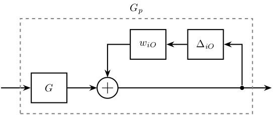
7 Sensor Fusion
7.1 Mechanical Architecture
\begin{tikzpicture} % Sensors \node[draw, fill=white, align=center, minimum height=1cm, minimum width=3cm] (lpsensor) at (0, 0) {High authority\\sensor}; \node[draw, fill=white, align=center, minimum height=1cm, minimum width=3cm, below=1 of lpsensor] (hpsensor) {Collocated\\sensor}; % Actuator \node[draw, fill=white, align=center, minimum height=1cm, minimum width=3cm, below=0.4 of hpsensor] (actuator) {Actuator}; % Mechanical Structure \begin{scope}[on background layer] \path[fill=black!20!white] ($(actuator.south west)+(-0.2, -0.2)$) rectangle ($(lpsensor.north east)+(0.2, 0.2)$); \end{scope} % Mechanical Structure \node[below=0.2 of actuator] {Mechanical Structure}; % Low Pass Filter \node[draw, fill=white, minimum height=1cm, minimum width=1.5cm, right=1cm of lpsensor] (lpf) {}; \coordinate[] (lpfcenter) at ($0.5*(lpf.center)+0.5*(lpf.north)$); \draw[] ($0.7*(lpf.south east)+0.3*(lpf)$) -- (lpfcenter) -- ++(-0.6, 0); % High Pass Filter \node[draw, fill=white, minimum height=1cm, minimum width=1.5cm, right=1cm of hpsensor] (hpf) {}; \coordinate[] (hpfcenter) at ($0.5*(hpf.center)+0.5*(hpf.north)$); \draw[] ($0.7*(hpf.south west)+0.3*(hpf)$) -- (hpfcenter) -- ++(0.6, 0); % Complementary Filters \node[align=center] at ($0.5*(hpf)+0.5*(lpf)$) {Complementary\\Filter}; % Add two sensors \node[addb] (addsensor) at ($0.5*(hpf)+0.5*(lpf)+(2.0,0)$){}; % Path \draw[->] (lpsensor) -- (lpf); \draw[->] (lpf) -| (addsensor); \draw[->] (hpsensor) -- (hpf); \draw[->] (hpf) -| (addsensor); \draw[->] (addsensor.east) -- ++(0.7, 0); % Super Sensor \coordinate[] (SSsw) at ($(hpsensor.south west) + (-0.1, -0.1)$); \coordinate[] (SSne) at ($(lpf.north-|addsensor.east) + (0.1, 0.1)$); \draw[dashed, color=black!50!white] (SSsw) rectangle (SSne); \node[above] at ($0.5*(SSne)+0.5*(SSne-|SSsw)$) {Super-Sensor}; % Controller \node[draw, fill=white, minimum height=1cm, minimum width=1.5cm, right=1cm of actuator] (K) {$K$}; % Feedback path \draw[->] ($(addsensor.east)+(0.4, 0)$) |- (K.east); \draw[->] (K.west) -- (actuator.east); \end{tikzpicture}

7.2 Sensor Fusion with complementary filters
\begin{tikzpicture} \node[addb={+}{}{}{}{-}] (addfb) at (0, 0){}; \node[block, right=0.75 of addfb] (K){$K$}; \node[block, right=1.5 of K] (G){$G^\prime$}; \node[addb={+}{}{}{}{}, right=0.75 of G] (adddy){}; \coordinate[] (KG) at ($0.5*(K.east)+0.5*(G.west)$); \node[block, below=0.75 of KG] (Gm){$G$}; \node[block, below=0.75 of Gm] (Hh){$H_H$}; \node[addb={+}{}{}{}{}, below=0.75 of Hh] (addsf){}; \node[block] (Hl) at (addsf-|G) {$H_L$}; \node[addb={+}{}{}{}{}, right=1.5 of Hl] (addn) {}; \draw[->] (addfb.east) -- (K.west) node[above left]{}; \draw[->] (K.east) -- (G.west) node[above left]{$u$}; \draw[->] (KG) node[branch]{} -- (Gm.north); \draw[->] (Gm.south) -- (Hh.north); \draw[->] (Hh.south) -- (addsf.north) node[above left]{}; \draw[->] (Hl.west) -- (addsf.east); \draw[->] (addsf.west) -| (addfb.south) node[below right]{}; \draw[->] (G.east) -- (adddy.west); \draw[<-] (addn.east) -- ++(0.75, 0) coordinate[](endpos) node[above left]{$n$}; \draw[->] (adddy.east) -- (G-|endpos) node[above left]{$y$}; \draw[->] (adddy-|addn) node[branch]{} -- (addn.north); \draw[<-] (addfb.west) -- ++(-0.75, 0) node[above right]{$r$}; \draw[->] (addn.west) -- (Hl.east) node[above right]{$y_m$}; \draw[<-] (adddy.north) -- ++(0, 0.75) node[below right]{$d_y$}; \end{tikzpicture}

7.3 General Sensor Fusion with real sensors
\begin{tikzpicture} \node[addb={+}{}{}{}{-}] (addfb) at (0, 0){}; \node[block, right=1 of addfb] (K){$K$}; \node[addb={+}{}{}{}{}, right=1 of K] (adddu){}; \node[block, right=1 of adddu] (G){$G$}; \node[block, below=0.5 of G] (Gc){$G_c$}; \node[addb={+}{}{}{}{}, right=0.5 of G] (adddy){}; \node[addb={+}{}{}{}{}, right=1.3 of Gc] (adddyc){}; \node[block, below=1 of Gc] (Hl){$H_L$}; \node[block, below=0.5 of Hl] (Hh){$H_H$}; \node[addb={+}{}{}{}{}] (addsf) at (Hl-|addfb) {}; \node[addb={+}{}{}{}{}, right=2 of Hl] (addn) {}; \node[addb={+}{}{}{}{}] (addnc) at ($(Hh-|addn)+(0.8, 0)$) {}; \draw[<-] (addfb.west) -- ++(-1, 0) node[above right]{$r$}; \draw[->] (addfb.east) -- (K.west) node[above left]{$\epsilon_{sf}$}; \draw[->] (K.east) -- (adddu.west); \draw[->] (adddu.east) -- (G.west) node[above left]{$u$}; \draw[->] ($(adddu.east)+(0.3, 0)$) node[branch]{} |- (Gc.west); \draw[<-top] (addn.east) -- ++(1.5, 0) coordinate[](endpos) node[above left]{$n$}; \draw[->] (G.east) -- (adddy.west); \draw[->] (Gc.east) -- (adddyc.west); \draw[->] (adddy.east) -- (G-|endpos) node[above left]{$y$}; \draw[->] (adddyc.east) -- (Gc-|endpos) node[above left]{$y_c$}; \draw[->] (Hl.west) -- (addsf.east); \draw[->] (Hh.west) -| (addsf.south); \draw[->] (addsf.north) -- (addfb.south) node[below right]{$y_{sf}$}; \draw[->top] (G-|addn) node[branch]{} -- (addn.north); \draw[->] (Gc-|addnc) node[branch]{} -- (addnc.north); \draw[->] (addn.west) -- (Hl); \draw[->] (addnc.west) -- (Hh); \draw[<-] (adddu.north) -- ++(0, 0.8) node[below right]{$d_u$}; \draw[<-] (adddy.north) -- ++(0, 0.8) node[below right]{$d_y$}; \draw[<-] (adddyc.north) -- ++(0, 0.8) node[below right]{$d_{yc}$}; \draw[<-] (addnc.east) -- (addnc-|endpos) node[above left]{$n_c$}; \end{tikzpicture}
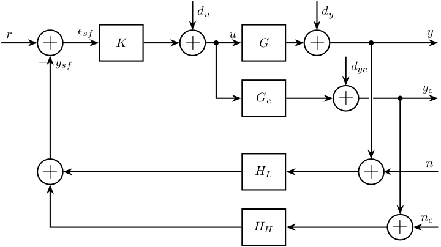
7.4 Equivalent configuration
\begin{tikzpicture} \node[addb={+}{}{}{}{-}] (addfb) at (0, 0){}; \node[addb={+}{}{}{}{-}, right=0.75 of addfb] (addK){}; \node[block, right=0.75 of addK] (K){$K$}; \node[block, right=2 of K] (G){$G^\prime$}; \node[addb={+}{}{}{}{}, right=0.75 of G] (adddy){}; \node[block, below right=0.5 and -0.3 of K] (Gm){$G$}; \node[block, below left =0.5 and -0.3 of K] (Hh){$H_H$}; \node[block, below=2 of G] (Hl) {$H_L$}; \node[addb={+}{}{}{}{}, right=1.5 of Hl] (addn) {}; \draw[->] (addfb.east) -- (addK.west); \draw[->] (addK.east) -- (K.west); \draw[->] (K.east) -- (G.west) node[above left]{$u$}; \draw[->] (G.east) -- (adddy.west); \draw[->] ($(G.west)+(-0.75, 0)$) node[branch](sffb){} |- (Gm.east); \draw[->] (Gm.west) -- (Hh.east); \draw[->] (Hh.west) -| (addK.south); \draw[<-] (addn.east) -- ++(0.75, 0) coordinate[](endpos) node[above left]{$n$}; \draw[->] (adddy.east) -- (G-|endpos) node[above left]{$y$}; \draw[->] (adddy-|addn) node[branch]{} -- (addn.north); \draw[<-] (addfb.west) -- ++(-0.75, 0) node[above right]{$r$}; \draw[->] (addn.west) -- (Hl.east) node[above right]{$y_m$}; \draw[<-] (adddy.north) -- ++(0, 0.75) node[below right]{$d_y$}; \draw[->] (Hl.west) -| (addfb.south) node[below right]{}; \node[fit={(addK.west|-Hh.south) (K.north-|sffb)}, inner sep=10pt, draw, dashed, color=gray, label={$K_{\text{fb}}$}] (Kfb) {}; \end{tikzpicture}
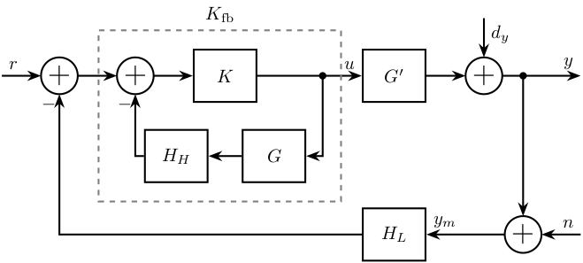
7.5 Equivalent configuration - classical Feedback
\begin{tikzpicture} \node[addb={+}{}{}{}{-}] (addfb) at (0, 0){}; \node[block, right=0.75 of addfb] (K){$K_{\text{fb}}$}; \node[block, right=0.75 of K] (G){$G^\prime$}; \node[addb={+}{}{}{}{}, right=0.75 of G] (adddy){}; \node[addb={+}{}{}{}{}, below right=0.75 and 0.5 of adddy] (addn) {}; \node[block] (Hl) at (G|-addn) {$H_L$}; \draw[->] (addfb.east) -- (K.west) node[above left]{}; \draw[->] (K.east) -- (G.west) node[above left]{$u$}; \draw[->] (G.east) -- (adddy.west); \draw[<-] (addn.east) -- ++(0.75, 0) coordinate[](endpos) node[above left]{$n$}; \draw[->] (G-|addn)node[branch]{} -- (addn.north); \draw[->] (adddy.east) -- (G-|endpos) node[above left]{$y$}; \draw[<-] (addfb.west) -- ++(-0.75, 0) node[above right]{$r$}; \draw[->] (addn.west) -- (Hl.east); \draw[->] (Hl.west) -| (addfb.south); \draw[<-] (adddy.north) -- ++(0, 0.75) node[below right]{$d_y$}; \end{tikzpicture}

7.6 Equivalent configuration - classical Feedback with pre-filter
\begin{tikzpicture} \node[addb={+}{}{}{}{-}] (addfb) at (0, 0){}; \node[block={1cm}{0.9cm}, left=0.5 of addfb] (Kr){$K_r$}; \node[block={1cm}{0.9cm}, right=0.5 of addfb] (K){$K_{\text{fb}}$}; \node[block={1cm}{0.9cm}, right=0.5 of K] (G){$G^\prime$}; \node[addb={+}{}{}{}{}, right=0.5 of G] (adddy){}; \node[addb={+}{}{}{}{}, below right=0.7 and 0.3 of adddy] (addn) {}; \node[block={1cm}{0.9cm}, left=0.5 of addn] (Hl) {$H_L$}; \draw[->] (addfb.east) -- (K.west) node[above left]{}; \draw[->] (K.east) -- (G.west) node[above left]{$u$}; \draw[->] (G.east) -- (adddy.west); \draw[<-] (addn.east) -- ++(0.5, 0) coordinate[](endpos) node[above left]{$n$}; \draw[->] (G-|addn)node[branch]{} -- (addn.north); \draw[->] (adddy.east) -- (G-|endpos) node[above left]{$y$}; \draw[<-] (Kr.west) -- ++(-0.5, 0) node[above right]{$r$}; \draw[->] (Kr.east) -- (addfb.west); \draw[->] (addn.west) -- (Hl.east); \draw[->] (Hl.west) -| (addfb.south); \draw[<-] (adddy.north) -- ++(0, 0.5) node[below right]{$d_y$}; \end{tikzpicture}

7.7 H-Infinity - Complementary filters - Generalized plant
\begin{tikzpicture} \node[block={6.0cm}{5.0cm}, dashed] (P) {}; \coordinate[] (inputw) at ($(P.south west)!0.75!(P.north west)$); \coordinate[] (inputu) at ($(P.south west)!0.25!(P.north west)$); \coordinate[] (outputl) at ($(P.south east)!0.8!(P.north east)$); \coordinate[] (outputh) at ($(P.south east)!0.5!(P.north east)$); \coordinate[] (outputv) at ($(P.south east)!0.2!(P.north east)$); \node[block, left=0.5 of outputl] (WL){$w_L$}; \node[block, left=0.5 of outputh] (WH){$w_H$}; \node[addb={+}{}{}{}{-}, left=1 of WH] (sub) {}; \draw[->] ($(inputw) + (-1.0, 0)$)coordinate(in) node[above right]{$w$} -- ++(1.5, 0)coordinate(branch) |- (outputv) -- ++(1, 0) node[above left]{$v$}; \draw[->] (branch|-sub)node[branch]{} -- (sub.west); \draw[->] (inputu-|in) node[above right]{$u$} -- ++(2.5, 0)coordinate(branch) |- (WL.west); \draw[->] (branch)node[branch]{} -| (sub.south); \draw[->] (sub.east) -- (WH.west); \draw[->] (WH.east) -- ++(1.5, 0)node[above left]{$z_H$}; \draw[->] (WL.east) -- ++(1.5, 0)node[above left]{$z_L$}; \end{tikzpicture}

7.8 H-Infinity - Complementary filters - Generalized plant - bis
\begin{tikzpicture} \node[block={5.0cm}{4.0cm}, dashed] (P) {}; \coordinate[] (inputw) at ($(P.south west)!0.8!(P.north west) + (-1, 0)$); \coordinate[] (inputu) at ($(P.south west)!0.4!(P.north west) + (-1, 0)$); \coordinate[] (outputh) at ($(P.south east)!0.8!(P.north east) + ( 1, 0)$); \coordinate[] (outputl) at ($(P.south east)!0.4!(P.north east) + ( 1, 0)$); \coordinate[] (outputv) at ($(P.south east)!0.1!(P.north east) + ( 1, 0)$); \node[block, left=1.5 of outputl] (WL){$w_L$}; \node[block, left=1.5 of outputh] (WH){$w_H$}; \node[addb={+}{}{}{}{-}, left=1 of WH] (sub) {}; \draw[->] (inputw) node[above right]{$w$} -- (sub.west); \draw[->] (inputu) node[above right]{$u$} -- (WL.west); \draw[->] (inputu-|sub) node[branch]{} -- (sub.south); \draw[->] (sub.east) -- (WH.west); \draw[->] ($(inputw)+(1.5, 0)$) node[branch]{} |- (outputv) node[above left]{$v$}; \draw[->] (WH.east) -- (outputh)node[above left]{$z_H$}; \draw[->] (WL.east) -- (outputl)node[above left]{$z_L$}; \end{tikzpicture}

7.9 H-Infinity - Complementary filters
\begin{tikzpicture} \node[block={6.0cm}{5.0cm}, dashed] (P) {}; \coordinate[] (inputw) at ($(P.south west)!0.75!(P.north west)$); \coordinate[] (inputu) at ($(P.south west)!0.25!(P.north west)$); \coordinate[] (outputl) at ($(P.south east)!0.8!(P.north east)$); \coordinate[] (outputh) at ($(P.south east)!0.5!(P.north east)$); \coordinate[] (outputv) at ($(P.south east)!0.2!(P.north east)$); \node[block, left=0.5 of outputl] (WL){$W_L$}; \node[block, left=0.5 of outputh] (WH){$W_H$}; \node[addb={+}{}{}{}{-}, left=1 of WH] (sub) {}; \node[block, below=0.5 of P] (HL) {$H_L$}; \coordinate[] (in) at ($(inputw) + (-0.5, 0)$); \draw[->] ($(inputw) + (-1.0, 0)$) node[above right]{$w$} -- ++(1.5, 0)coordinate(branch) |- (outputv) -- ++(0.5, 0) |- (HL.east); \draw[->] (branch|-sub)node[branch]{} -- (sub.west); \draw[->top] (HL.west) -| (inputu-|in) -- ++(1.5, 0)coordinate(branch) |- (WL.west); \draw[->] (branch)node[branch]{} -| (sub.south); \draw[->] (sub.east) -- (WH.west); \draw[->] (WH.east) -- ++(1.5, 0)node[above left]{$z_H$}; \draw[->] (WL.east) -- ++(1.5, 0)node[above left]{$z_L$}; \end{tikzpicture}
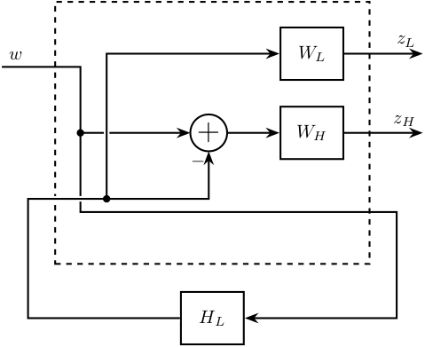
7.10 H-Infinity - Complementary filters - bis
\begin{tikzpicture} \node[block={5.0cm}{4.0cm}, dashed] (P) {}; \coordinate[] (inputw) at ($(P.south west)!0.8!(P.north west) + (-1, 0)$); \coordinate[] (inputu) at ($(P.south west)!0.4!(P.north west) + (-1, 0)$); \coordinate[] (outputh) at ($(P.south east)!0.8!(P.north east) + ( 1, 0)$); \coordinate[] (outputl) at ($(P.south east)!0.4!(P.north east) + ( 1, 0)$); \coordinate[] (outputv) at ($(P.south east)!0.1!(P.north east) + ( 1, 0)$); \node[block, left=1.5 of outputl] (WL){$w_L$}; \node[block, left=1.5 of outputh] (WH){$w_H$}; \node[addb={+}{}{}{}{-}, left=1 of WH] (sub) {}; \node[block, below=0.5 of P] (HL) {$H_L$}; \draw[->] (inputw) node[above right]{$w$} -- (sub.west); \draw[->] (HL.west) -| ($(inputu)+(0.5, 0)$) -- (WL.west); \draw[->] (inputu-|sub) node[branch]{} -- (sub.south); \draw[->] (sub.east) -- (WH.west); \draw[->] ($(inputw)+(1.5, 0)$) node[branch]{} |- ($(outputv)+(-0.5, 0)$) |- (HL.east); \draw[->] (WH.east) -- (outputh)node[above left]{$z_H$}; \draw[->] (WL.east) -- (outputl)node[above left]{$z_L$}; \end{tikzpicture}

7.11 H-Infinity - 3 Complementary filters
\def\cdist{0.7} \begin{tikzpicture} \node[block={7.0cm}{6.0cm}, dashed] (P) {}; \node[above] at (P.north) {$P$}; \coordinate[] (inputw) at ($(P.south west)!0.8!(P.north west) + (-\cdist, 0)$); \coordinate[] (inputu) at ($(P.south west)!0.4!(P.north west) + (-\cdist, 0)$); \coordinate[] (output3) at ($(P.south east)!0.8!(P.north east) + ( \cdist, 0)$); \coordinate[] (output2) at ($(P.south east)!0.6!(P.north east) + ( \cdist, 0)$); \coordinate[] (output1) at ($(P.south east)!0.4!(P.north east) + ( \cdist, 0)$); \coordinate[] (outputv) at ($(P.south east)!0.1!(P.north east) + ( \cdist, 0)$); \node[block, left=2*\cdist of output1] (W1){$w_1$}; \node[block, left=2*\cdist of output2] (W2){$w_2$}; \node[block, left=2*\cdist of output3] (W3){$w_3$}; \node[addb={+}{}{}{}{-}, left=of W3] (sub1) {}; \node[addb={+}{}{}{}{-}, left=of sub1] (sub2) {}; \node[block, below=\cdist of P] (H) {$\begin{bmatrix}H_1 \\ H_2\end{bmatrix}$}; \draw[->] (inputw) node[above right]{$w$} -- (sub2.west); \draw[->] (W1-|sub1)node[branch]{} -- (sub1.south); \draw[->] (W2-|sub2)node[branch]{} -- (sub2.south); \draw[->] ($(sub2.west)+(-0.5, 0)$) node[branch]{} |- (outputv) |- (H.east); \draw[->] ($(H.south west)!0.7!(H.north west)$) -| ($(inputu|-W1)+(0.4, 0)$) -- (W1.west); \draw[->] ($(H.south west)!0.3!(H.north west)$) -| (inputu|-W2) -- (W2.west); \draw[->] (sub2.east) -- (sub1.west); \draw[->] (sub1.east) -- (W3.west); \draw[->] (W1.east) -- (output1)node[above left]{$z_1$}; \draw[->] (W2.east) -- (output2)node[above left]{$z_2$}; \draw[->] (W3.east) -- (output3)node[above left]{$z_3$}; \end{tikzpicture}
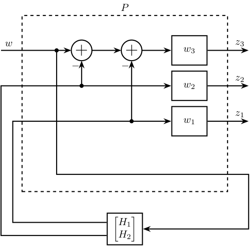
7.12 Generate Complementary Filters using Feedback Control Architecture
\begin{tikzpicture} \node[addb={+}{}{}{}{-}] (addfb) at (0, 0){}; \node[block, right=1 of addfb] (L){$L$}; \node[addb={+}{}{}{}{}, right=1 of L] (adddy){}; \draw[<-] (addfb.west) -- ++(-1, 0) node[above right]{$y_1$}; \draw[->] (addfb.east) -- (L.west); \draw[->] (L.east) -- (adddy.west); \draw[->] (adddy.east) -- ++(1, 0) node[above left]{$y_s$}; \draw[->] ($(adddy.east) + (0.5, 0)$) node[branch]{} -- ++(0, -1) -| (addfb.south); \draw[<-] (adddy.north) -- ++(0, 1) node[below right]{$y_2$}; \end{tikzpicture}

7.13 Equivalent configuration - classical Feedback
\begin{tikzpicture} \node[addb={+}{}{}{}{-}] (addfb) at (0, 0){}; \node[block, right=0.75 of addfb] (K){$G^{-1}H_H^{-1}$}; \node[block, right=0.75 of K] (G){$G^\prime$}; \node[addb={+}{}{}{}{}, right=0.75 of G] (adddy){}; \node[addb={+}{}{}{}{}, below right=0.75 and 0.5 of adddy] (addn) {}; \node[block] (Hl) at (G|-addn) {$H_L$}; \draw[->] (addfb.east) -- (K.west) node[above left]{}; \draw[->] (K.east) -- (G.west) node[above left]{$u$}; \draw[->] (G.east) -- (adddy.west); \draw[<-] (addn.east) -- ++(0.75, 0) coordinate[](endpos) node[above left]{$n$}; \draw[->] (G-|addn)node[branch]{} -- (addn.north); \draw[->] (adddy.east) -- (G-|endpos) node[above left]{$y$}; \draw[<-] (addfb.west) -- ++(-0.75, 0) node[above right]{$r$}; \draw[->] (addn.west) -- (Hl.east); \draw[->] (Hl.west) -| (addfb.south); \draw[<-] (adddy.north) -- ++(0, 0.75) node[below right]{$d_y$}; \end{tikzpicture}

8 Rotating Frame
8.1 Control Diagram for fixed measurement
\begin{tikzpicture} % Blocs \node[addb={+}{}{}{}{-}] (subr) at (0, 0) {}; \node[block, right=0.8 of subr] (J) {$J(\theta)$}; \node[block, right=1 of J] (K) {$K$}; \node[block, right=1 of K] (G) {$G(\theta)$}; % Connections and labels \draw[<-] (subr.west) node[above left]{$r_x$} -- ++(-1, 0); \draw[->] (subr.east) -- (J.west) node[above left]{$\epsilon_x$}; \draw[->] (J.east) -- (K.west) node[above left]{$\epsilon_d$}; \draw[->] (K.east) -- (G.west) node[above left]{$F$}; \draw[->] (G.east) node[above right]{$D_x$} -| ($(G.east)+(1, -1)$) -| (subr.south); \end{tikzpicture}
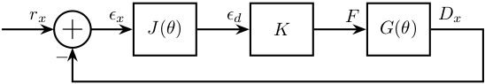
8.2 Control Diagram for fixed measurement - 2DoF
\begin{tikzpicture} % Blocs \node[addb={+}{}{}{}{-}] (subr) at (0, 0) {}; \node[block, right=1 of subr] (J) {$J(\theta)$}; \node[block, right=1 of J] (K) {$K$}; \node[block, right=1 of K] (G) {$G(\theta)$}; % Connections and labels \draw[<-] (subr.west) node[above left]{$\begin{bmatrix}r_x\\r_y\end{bmatrix}$} -- ++(-1, 0); \draw[->] (subr.east) -- (J.west) node[above left]{$\begin{bmatrix}\epsilon_x\\\epsilon_y\end{bmatrix}$}; \draw[->] (J.east) -- (K.west) node[above left]{$\begin{bmatrix}\epsilon_u\\\epsilon_v\end{bmatrix}$}; \draw[->] (K.east) -- (G.west) node[above left]{$\begin{bmatrix}F_u\\F_v\end{bmatrix}$}; \draw[->] (G.east) node[above right]{$\begin{bmatrix}D_x\\D_y\end{bmatrix}$} -| ($(G.east)+(1, -1)$) -| (subr.south); \end{tikzpicture}

8.3 Control diagram for rotating measurement
\begin{tikzpicture} % Blocs \node[block] (J) at (0, 0) {$J(\theta)$}; \node[addb={+}{}{}{}{-}, right=0.8 of J] (subr) {}; \node[block, right=0.8 of subr] (K) {$K$}; \node[block, right=1 of K] (G) {$G$}; % Connections and labels \draw[<-] (J.west)node[above left]{$r_x$} -- ++(-1, 0); \draw[->] (J.east) -- (subr.west) node[above left]{$r_d$}; \draw[->] (subr.east) -- (K.west) node[above left]{$\epsilon_d$}; \draw[->] (K.east) -- (G.west) node[above left]{$F$}; \draw[->] (G.east) node[above right]{$D_x$} -| ($(G.east)+(1, -1)$) -| (subr.south); \end{tikzpicture}
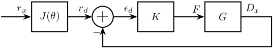
8.4 Control diagram for rotating measurement - 2DoF
\begin{tikzpicture} % Blocs \node[block] (J) at (0, 0) {$J(\theta)$}; \node[addb={+}{}{}{}{-}, right=1 of J] (subr) {}; \node[block, right=0.8 of subr] (K) {$K$}; \node[block, right=1 of K] (G) {$G$}; % Connections and labels \draw[<-] (J.west)node[above left]{$\begin{bmatrix}r_x\\r_y\end{bmatrix}$} -- ++(-1, 0); \draw[->] (J.east) -- (subr.west) node[above left]{$\begin{bmatrix}r_u\\r_v\end{bmatrix}$}; \draw[->] (subr.east) -- (K.west) node[above left]{$\begin{bmatrix}\epsilon_u\\\epsilon_v\end{bmatrix}$}; \draw[->] (K.east) -- (G.west) node[above left]{$\begin{bmatrix}F_u\\F_v\end{bmatrix}$}; \draw[->] (G.east) node[above right]{$\begin{bmatrix}D_u\\D_v\end{bmatrix}$} -| ($(G.east)+(1, -1)$) -| (subr.south); \end{tikzpicture}

8.5 SISO Controller
\begin{tikzpicture} % Blocs \node[addb={+}{}{}{}{-}] (subr) at (0, 0) {}; \node[block, right=1 of subr] (K) {$K_u$}; \node[block, right=1 of K] (G) {$G_u$}; % Connections and labels \draw[<-] (subr.west) node[above left]{$r_u$} -- ++(-1, 0); \draw[->] (subr.east) -- (K.west) node[above left]{$\epsilon_u$}; \draw[->] (K.east) -- (G.west) node[above left]{$F_u$}; \draw[->] (G.east) node[above right]{$D_u$} -| ($(G.east)+(1, -1)$) -| (subr.south); \end{tikzpicture}
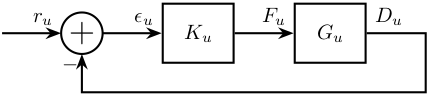
8.6 Diagonal Controller
\begin{tikzpicture} % Blocs \node[addb={+}{}{}{}{-}] (subr) at (0, 0) {}; \node[block, right=1 of subr] (K) {$\begin{bmatrix}K_u & 0 \\ 0 & K_v\end{bmatrix}$}; \node[block, right=1 of K] (G) {$G$}; % Connections and labels \draw[<-] (subr.west) node[above left]{$\begin{bmatrix}r_u\\r_v\end{bmatrix}$} -- ++(-1, 0); \draw[->] (subr.east) -- (K.west) node[above left]{$\begin{bmatrix}\epsilon_u\\\epsilon_v\end{bmatrix}$}; \draw[->] (K.east) -- (G.west) node[above left]{$\begin{bmatrix}F_u\\F_v\end{bmatrix}$}; \draw[->] (G.east) node[above right]{$\begin{bmatrix}D_u\\D_v\end{bmatrix}$} -| ($(G.east)+(1, -1)$) -| (subr.south); \end{tikzpicture}
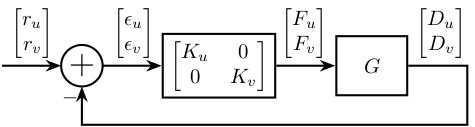
9 Control Tradeoffs
9.1 Performance / Robustness
\begin{tikzpicture} % Scale \def\yscale{0.8} \def\xscale{1.0} % Colors \def\colorstart{blue} \def\colorend{red} % Axis \draw [->] (-0.5,0) -- (10*\xscale,0) node[below left]{Robustness}; \draw [->] (0,-0.5) -- (0,10*\yscale) node[below left, rotate=90, anchor=south east]{Performance}; % Color Bar \shade[draw, bottom color=\colorstart, top color=\colorend, fill opacity=0.5] (10*\xscale, 1*\yscale) rectangle (11*\xscale, 9*\yscale); \node[rotate=90, above] at (10*\xscale, 5*\yscale) {Required information on plant}; \node[above] at (10.5*\xscale, 1*\yscale) {little}; \node[below] at (10.5*\xscale, 9*\yscale) {large}; % =================================== % Classical Control % =================================== % Control Types \node[align=center] (pid) at (7.0*\xscale, 1.2*\yscale) {PID\\Lead-Lag}; \begin{scope}[on background layer] % Control Families \node[ellipse, draw, dashed, minimum width=3.0*\xscale cm, minimum height=2.0*\yscale cm, fill=\colorstart!90!\colorend, fill opacity=0.5, text opacity=1] (classicalcontrol) at (pid) {}; \end{scope} \node[above, align=center] at (classicalcontrol.north) {\textbf{Classical control} (1930)\\{\small SISO, Manual Method}}; % =================================== % =================================== % Modern Control % =================================== % Control Types \node[align=center] (lqg) at (2.0*\xscale, 7.5*\yscale) {LQR\\LQG}; \begin{scope}[on background layer] \node[ellipse, draw, dashed, minimum width=2.0*\xscale cm, minimum height=2.0*\yscale cm, fill=\colorstart!20!\colorend, fill opacity=0.5, text opacity=1] (moderncontrol) at (lqg) {}; \end{scope} \node[above, align=center] at (moderncontrol.north) {\textbf{Modern control} (1960)\\{\small MIMO, Optimal}}; % =================================== % =================================== % Robust Control % =================================== % Control Types \node[align=center] (hinf) at (4.5*\xscale, 4.8*\yscale) {$H_\infty$\\$H_2$}; \node[] (mu) at (5.5*\xscale, 4.8*\yscale) {$\mu$}; \begin{scope}[on background layer] \node[ellipse, draw, dashed, minimum width=3.0*\xscale cm, minimum height=2.5*\yscale cm, shade, left color=\colorstart!50!\colorend, right color=\colorstart!10!\colorend, fill opacity=0.5, text opacity=1] (robustcontrol) at ($0.5*(hinf)+0.5*(mu)$) {}; \end{scope} \node[above, align=center] at (robustcontrol.north) {\textbf{Robust control} (1990)\\{\small MIMO, Robust}}; % =================================== % =================================== % Sensor Fusion With Robust Control % =================================== \coordinate (sf) at (6.8*\xscale, 8.0*\yscale); \node[ellipse, draw, dashed, minimum width=1.0 cm, minimum height=1.0 cm, fill=\colorstart!75!\colorend, fill opacity=0.5, text opacity=1] (sfcontrol) at (sf) {$SF$ - $H_\infty$}; \node[above, align=center] at (sfcontrol.north) {\textbf{Optimal Sensor-Fusion}\\{\small MIMO, High performance, Robust}}; % =================================== \end{tikzpicture}

9.2 Performance / Knowledge
\begin{tikzpicture} % Scale \def\yscale{0.5} \def\xscale{0.8} % Axis \draw [->] (-0.5,0) -- (10*\xscale,0) node[below left]{Required Plant Knowledge}; \draw [->] (0,-0.5) -- (0,10*\yscale) node[below left, rotate=90, anchor=south east]{Robust Performance}; % Control Types \node[] (pid) at (2.0*\xscale, 1.5*\yscale) {PID}; \node[] (lqg) at (7.5*\xscale, 3.5*\yscale) {LQG}; \node[] (hinf) at (6.0*\xscale, 7.0*\yscale) {$H_\infty$}; \node[] (mu) at (8.0*\xscale, 7.0*\yscale) {$\mu$}; \node[] (hinsf) at (3.0*\xscale, 6.5*\yscale) {$H_\infty$-Sensor fusion}; \begin{scope}[on background layer] % Control Families \node[ellipse, draw, fill=white, dashed, minimum width=3.0*\xscale cm, minimum height=1.5*\yscale cm] (classicalcontrol) at (pid) {}; \node[ellipse, draw, fill=white, dashed, minimum width=2.0*\xscale cm, minimum height=2.0*\yscale cm] (moderncontrol) at (lqg) {}; \node[ellipse, draw, fill=white, dashed, minimum width=3.5*\xscale cm, minimum height=3.0*\yscale cm] (robustcontrol) at ($0.5*(hinf)+0.5*(mu)$) {}; \end{scope} % Control Families Names \node[above] at (classicalcontrol.north) {Classical control}; \node[above] at (moderncontrol.north) {Modern control}; \node[above] at (robustcontrol.north) {Robust control}; \end{tikzpicture}

10 Modern Control
10.1 LQG
\begin{tikzpicture} % Blocs \node[block={2.0cm}{1.5cm}] (P) {Plant}; \node[block={2.0cm}{1.5cm}, below left=0.7 and -0.5 of P] (Kr) {LQR}; \node[block={2.0cm}{1.5cm}, below right=0.7 and -0.5 of P, align=center] (kalman) {Kalman\\Filter}; % Input and outputs coordinates \coordinate[] (inputwd) at ($(P.north west)!0.25!(P.north east)$); \coordinate[] (inputwn) at ($(P.north west)!0.75!(P.north east)$); % Connections and labels \draw[<-] (inputwd) -- ++(0, 0.6)node[right]{$w_d$}; \draw[<-] (inputwn) -- ++(0, 0.6)node[right]{$w_n$}; \draw[->] (P.east) node[above right]{$y$} -- ++(2, 0) |- (kalman.east); \draw[<-] (P.west) -- ++(-2, 0) |- (Kr.west); \draw[->] (kalman.west) -- (Kr.east) node[above right] {$\hat{x}$}; \draw[->] ($(P.west) + (-0.6, 0)$) node[branch]{}node[above]{$u$} -- ++(0, -1) -| (kalman.north); \end{tikzpicture}
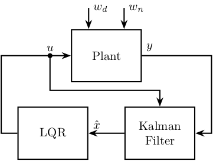
10.2 LQG with Kalman filter
\begin{tikzpicture} % Blocs \node[block={2.0cm}{1.5cm}] (P) {Plant}; \node[block, below=1 of P] (Kf) {$K_f$}; \node[block, below right=0.7 and 0 of Kf] (C) {$C$}; \node[addb={+}{-}{}{+}{}, right=0.7 of C] (sub) {}; \node[block, below left=0.7 and 0 of Kf] (int) {$\int$}; \node[addb={+}{+}{+}{}{+}, left=0.7 of int] (add) {}; \node[block, below=0.7 of int] (A) {$A$}; \node[block, left=2.7 of Kf] (B) {$B$}; \node[block, below left=0.7 and 1 of A] (Kr) {$-K_r$}; % \node[block={2.0cm}{1.5cm}, below right=0.7 and -0.5 of P, align=center] (kalman) {Kalman\\Filter}; % % Input and outputs coordinates \coordinate[] (inputwd) at ($(P.north west)!0.25!(P.north east)$); \coordinate[] (inputwn) at ($(P.north west)!0.75!(P.north east)$); % Connections and labels \draw[<-] (inputwd) -- ++(0, 0.6)node[right]{$w_d$}; \draw[<-] (inputwn) -- ++(0, 0.6)node[right]{$w_n$}; \draw[->] (P.east) node[above right]{$y$} -- ++(3, 0) |- (sub.east); \draw[->] (sub.north) |- (Kf.east); \draw[->] (Kf.west) -| (add.north); \draw[->] (add.east) -- (int.west) node[above left]{$\dot{\hat{x}}$}; \draw[->] (int.east) -- (C.west); \draw[->] (C.east) -- (sub.west) node[above left]{$\hat{y}$}; \draw[->] ($(int.east)!0.5!(C.west)$) node[branch](point){} |- (Kr.east) node[above right]{$\hat{x}$}; \draw[->] (B.south) |- (add.west); \draw[->] (A.west) -| (add.south); \draw[<-] (P.west) node[above left]{$u$} -- ++(-4.2, 0) |- (Kr.west); \draw[->] (P-|B)node[branch]{} -- (B.north); \draw[->] (A-|point)node[branch]{} -- (A.east); %% Kalman Filter \node[fit={($(B.north west) + (-0.3, 0.3)$) ($(sub.east|-A.south) + (0.3, -0.3)$)}, inner sep=0pt, draw, dashed, color=gray, label={Kalman Filter}] {}; \end{tikzpicture}
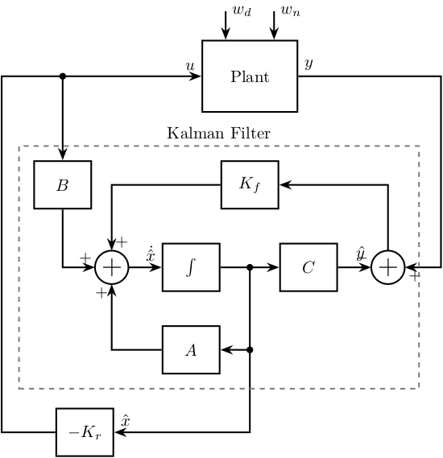
10.3 LQG with Integral Action
\begin{tikzpicture} % Blocs \node[block={2.0cm}{1.5cm}] (P) {Plant}; \node[block={2.0cm}{1.5cm}, left=1 of P] (Kr) {LQR}; \coordinate[] (input1) at ($(Kr.north west)!0.25!(Kr.south west)$); \coordinate[] (input2) at ($(Kr.north west)!0.75!(Kr.south west)$); \node[block, left=1 of input1] (int) {$\int$}; \node[addb={+}{+}{}{}{-}, left=0.7 of int] (addb) {}; \node[block={2.0cm}{1.5cm}, below=0.7 of Kr, align=center] (kalman) {Kalman\\Filter}; % Input and outputs coordinates \coordinate[] (inputwd) at ($(P.north west)!0.25!(P.north east)$); \coordinate[] (inputwn) at ($(P.north west)!0.75!(P.north east)$); \coordinate[] (inputu) at ($(kalman.north east)!0.25!(kalman.south east)$); \coordinate[] (inputy) at ($(kalman.north east)!0.75!(kalman.south east)$); % Connections and labels \draw[<-] (addb.west) -- ++(-0.8, 0)node[above right]{$r$}; \draw[->] (addb.east) -- (int.west); \draw[->] (int.east) -- (input1); \draw[->] (Kr.east) -- (P.west) node[above left]{$u$}; \draw[<-] (inputwd) -- ++(0, 0.6)node[right]{$w_d$}; \draw[<-] (inputwn) -- ++(0, 0.6)node[right]{$w_n$}; \draw[->] (P.east) -- ++(1, 0) node[above left]{$y$}; \draw[->] ($(Kr.east)!0.5!(P.west)$)node[branch]{} |- (inputu); \draw[->] ($(P.east) + (0.4, 0)$)node[branch]{} |-node[branch](point){} (inputy); \draw[->] (kalman.west) -- ++(-0.6, 0) |- (input2); \draw[->] (point) -- ++(0, -0.6) -| (addb.south); % \draw[->] (P.east) node[above right]{$y$} -- ++(2, 0) |- (kalman.east); % \draw[<-] (P.west) -- ++(-2, 0) |- (Kr.west); % \draw[->] (kalman.west) -- (Kr.east) node[above right] {$\hat{x}$}; % \draw[->] ($(P.west) + (-0.6, 0)$) node[branch]{}node[above]{$u$} -- ++(0, -1) -| (kalman.north); \end{tikzpicture}
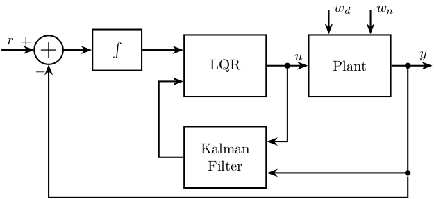
11 H-Infinity Control
11.1 S/KS Mixed sensitivity - Disturbance Rejection
\begin{tikzpicture} % Blocs \node[block] (G) {$G$}; \node[addb, right=1 of G] (addw) {}; \node[addb={+}{-}{}{}{+}, right=1 of addw] (addr) {}; \node[block, above right=0.5 and 1 of addw] (W2) {$-W_2$}; \node[block, above=0.5 of W2] (W1) {$W_1$}; \node[block, below=1 of addw] (K) {$K$}; \coordinate[right=1.2 of W1] (z); \coordinate[above left=2 and 1.7 of G] (w); \coordinate (u) at (w|-G); \coordinate (v) at (z|-G); \node[fit={($(G.south west) + (-1, -0.5)$) ($(W1.north east) + (0.5, 0.5)$)}, inner sep=0pt, draw, dashed, color=gray, label={Generalized Weighted Plant $P$}] (P) {}; % Connections \draw[->] (G.east) -- (addw.west); \draw[->] ($(addw.east)+(0.5, 0)$)node[branch]{} |- (W1.west); \draw[->] ($(G.west)+(-0.5, 0)$)node[branch]{} |- (W2.west); \draw[->] (W1.east) -- (W1-|z) node[above left](z1){$z_1$}; \draw[->] (W2.east) -- (W2-|z) node[above left](z2){$z_2$}; \draw[->] (addw.east) -- (addr.west); \draw[<-] (addr.south) -- ++(0, -0.6)node[above right]{$r = 0$}; \draw[->] (addr.east) -- (addw-|z) |- node[near start, right]{$v$} (K.east); \draw[->] (K.west) -| node[near end, left]{$u$} (G-|w) -- (G.west); \draw[->] (w) node[above]{$w = d$} -| (addw.north); % W and Z brackets \draw [decoration={brace, raise=5pt}, decorate] (z1.north east) -- node[right=6pt]{$z$} (z2.south east); \end{tikzpicture}

11.2 S/KS Mixed sensitivity - Reference Tracking
\begin{tikzpicture} % Blocs \node[block] (G) {$G$}; \node[addb={+}{-}{+}{}{}, right=1 of G] (addw) {}; \node[block, above right=0.5 and 1 of addw] (W2) {$W_2$}; \node[block, above=0.5 of W2] (W1) {$W_1$}; \node[block, below=1 of addw] (K) {$K$}; \coordinate[right=1.2 of W1] (z); \coordinate[above left=2 and 1.7 of G] (w); \coordinate (u) at (w|-G); \coordinate (v) at (z|-G); \node[fit={($(G.south west) + (-1, -0.5)$) ($(W1.north east) + (0.5, 0.5)$)}, inner sep=0pt, draw, dashed, color=gray, label={Generalized Weighted Plant $P$}] (P) {}; % Connections \draw[->] (G.east) -- (addw.west); \draw[->] ($(addw.east)+(0.5, 0)$)node[branch]{} |- (W1.west); \draw[->] ($(G.west)+(-0.5, 0)$)node[branch]{} |- (W2.west); \draw[->] (W1.east) -- (W1-|z) node[above left](z1){$z_1$}; \draw[->] (W2.east) -- (W2-|z) node[above left](z2){$z_2$}; \draw[->] (addw.east) -- (addw-|z) |- node[near start, right]{$v$} (K.east); \draw[->] (K.west) -| node[near end, left]{$u$} (G-|w) -- (G.west); \draw[->] (w) node[above]{$w = r$} -| (addw.north); % W and Z brackets \draw [decoration={brace, raise=5pt}, decorate] (z1.north east) -- node[right=6pt]{$z$} (z2.south east); \end{tikzpicture}

11.3 S/T Mixed sensitivity
\begin{tikzpicture} % Blocs \node[block] (G) {$G$}; \node[addb={+}{-}{+}{}{}, right=1 of G] (addw) {}; \node[block, above right=0.5 and 1 of addw] (W2) {$W_2$}; \node[block, above=0.5 of W2] (W1) {$W_1$}; \node[block, below=1 of addw] (K) {$K$}; \coordinate[right=1.2 of W1] (z); \coordinate[above left=2 and 1.2 of G] (w); \coordinate (u) at (w|-G); \coordinate (v) at (z|-G); \node[fit={($(G.south west) + (-0.5, -0.5)$) ($(W1.north east) + (0.5, 0.5)$)}, inner sep=0pt, draw, dashed, color=gray, label={Generalized Weighted Plant $P$}] (P) {}; % Connections \draw[->] (G.east) -- (addw.west); \draw[->] ($(addw.east)+(0.5, 0)$)node[branch]{} |- (W1.west); \draw[->] ($(G.east)+(0.5, 0)$)node[branch]{} |- (W2.west); \draw[->] (W1.east) -- (W1-|z) node[above left](z1){$z_1$}; \draw[->] (W2.east) -- (W2-|z) node[above left](z2){$z_2$}; \draw[->] (addw.east) -- (addw-|z) |- node[near start, right]{$v$} (K.east); \draw[->] (K.west) -| node[near end, left]{$u$} (G-|w) -- (G.west); \draw[->] (w) node[above]{$w = r$} -| (addw.north); % W and Z brackets \draw [decoration={brace, raise=5pt}, decorate] (z1.north east) -- node[right=6pt]{$z$} (z2.south east); \end{tikzpicture}
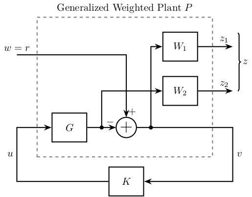
11.4 Signal Based H-Infinity
\begin{tikzpicture} % Blocs \node[block] (G) {$G$}; \node[block, above=0.6 of G] (Gd) {$G_d$}; \node[block, above=0.6 of Gd] (Wref) {$W_\text{ref}$}; \node[block={1.2cm}{1.5cm}, left=0.6 of G] (K) {$K$}; % Input and outputs coordinates \coordinate[] (inputy) at ($(K.south west)!0.25!(K.north west)$); \coordinate[] (inputr) at ($(K.south west)!0.75!(K.north west)$); \node[addb, right=0.5 of G] (addy) {}; \node[addb={+}{-}{}{}{+}, right=0.1 of Wref-|addy.east] (sub) {}; \node[block, right=0.5 of sub] (We) {$W_e$}; \node[block] (Wu) at ($(G.south-|We) + (0, -0.6)$) {$W_u$}; \node[block, left=1.3 of inputr] (Wr) {$W_r$}; \node[block] (Wd) at (Wr|-Gd) {$W_d$}; \node[addb, below left=1 and 0.3 of K] (addn) {}; \node[block] (Wn) at (Wr|-addn) {$W_n$}; % Connections \draw[->] (Wd.east) -- (Gd.west); \draw[->] (Gd.east) -| (addy.north); \draw[->] (Wr.east) -- (inputr.west); \draw[->] (Wn.east) -- (addn.west); \draw[->] (addn.north) |- (inputy.west) node[above left]{$y_m$}; \draw[->] ($(K.east)+(0.2, 0)$)node[branch](u){} |- (Wu.west); \draw[->] ($(Wr.east)+(0.4, 0)$)node[branch](rs){} |- (Wref.west); \draw[->] (Wref.east) -- (sub.west); \draw[->] (sub.east) -- (We.west); \draw[->] (K.east) -- (G.west); \draw[->] (G.east) -- (addy.west); \draw[] (addy.east) -- (addy-|sub)node[branch]{}node[right]{$y$}; \draw[->] (addy-|sub) -- (sub.south); \draw[->] (addy-|sub) |- (addn.east); \draw[<-] (Wd.west) -- ++(-0.6, 0) node[above right]{$d$}; \draw[<-] (Wr.west) -- ++(-0.6, 0) node[above right]{$r$}; \draw[<-] (Wn.west) -- ++(-0.6, 0) node[above right]{$n$}; \draw[->] (We.east) -- ++( 0.6, 0) node[above left]{$z_1$}; \draw[->] (Wu.east) -- ++( 0.6, 0) node[above left]{$z_2$}; \node[above] at (u) {$u$}; \node[above right] at (rs) {$r_s$}; \end{tikzpicture}

11.5 Signal Based H-Infinity with uncertainty
\begin{tikzpicture} % Blocs \node[block] (G) {$G$}; \node[block, above=0.6 of G] (Gd) {$G_d$}; \node[block, above=0.6 of Gd] (Wref) {$W_\text{ref}$}; \node[block={1.2cm}{1.5cm}, left=5 of G] (K) {$K$}; \node[addb, left=0.5 of G] (addu) {}; \node[block, above left=0.1 and 0.2 of addu] (delta){$\Delta$}; \node[block, left=0.4 of delta] (wu){$W$}; % Input and outputs coordinates \coordinate[] (inputy) at ($(K.south west)!0.25!(K.north west)$); \coordinate[] (inputr) at ($(K.south west)!0.75!(K.north west)$); \node[addb, right=0.5 of G] (addy) {}; \node[addb={+}{-}{}{}{+}, right=0.1 of Wref-|addy.east] (sub) {}; \node[block, right=0.5 of sub] (We) {$W_e$}; \node[block] (Wu) at ($(G.south-|We) + (0, -0.6)$) {$W_u$}; \node[block, left=1.3 of inputr] (Wr) {$W_r$}; \node[block] (Wd) at (Wr|-Gd) {$W_d$}; \node[addb, below left=1 and 0.3 of K] (addn) {}; \node[block] (Wn) at (Wr|-addn) {$W_n$}; % Connections \draw[->] (Wd.east) -- (Gd.west); \draw[->] (Gd.east) -| (addy.north); \draw[->] (Wr.east) -- (inputr.west); \draw[->] (Wn.east) -- (addn.west); \draw[->] (addn.north) |- (inputy.west) node[above left]{$y_m$}; \draw[->] ($0.5*(K.east)+0.5*(addu.west)$)node[branch](u){} |- (Wu.west); \draw[->] ($(Wr.east)+(0.4, 0)$)node[branch](rs){} |- (Wref.west); \draw[->] (Wref.east) -- (sub.west); \draw[->] (sub.east) -- (We.west); \draw[->] (K.east) -- (addu.west); \draw[->] (addu.east) -- (G.west); \draw[->] ($(K.east)+(0.4, 0)$)node[branch] |- (wu.west); \draw[->] (wu.east) -- (delta.west); \draw[->] (delta.east) -| (addu.north); \draw[->] (G.east) -- (addy.west); \draw[] (addy.east) -- (addy-|sub)node[branch]{}node[right]{$y$}; \draw[->] (addy-|sub) -- (sub.south); \draw[->] (addy-|sub) |- (addn.east); \draw[<-] (Wd.west) -- ++(-0.6, 0) node[above right]{$d$}; \draw[<-] (Wr.west) -- ++(-0.6, 0) node[above right]{$r$}; \draw[<-] (Wn.west) -- ++(-0.6, 0) node[above right]{$n$}; \draw[->] (We.east) -- ++( 0.6, 0) node[above left]{$z_1$}; \draw[->] (Wu.east) -- ++( 0.6, 0) node[above left]{$z_2$}; \node[above] at (u) {$u$}; \node[above right] at (rs) {$r_s$}; \end{tikzpicture}

11.6 Mixed sensitivity configuration
\begin{tikzpicture} \node[addb={+}{}{}{}{-}] (addsub) {}; \node[block, right=1.5 of addsub] (K) {$K(s)$}; \node[block, right=1.5 of K] (G) {$G(s)$}; % Weighting Functions \node[block, fill=black!40] (w1) at ($0.5*(addsub.east) + 0.5*(K.west) + (0, 1.5)$) {$W1(s)$}; \node[block, fill=black!40] (w2) at ($0.5*(K.east) + 0.5*(G.west) + (0, 1.5)$) {$W2(s)$}; \node[block, fill=black!40] (w3) at ($(G.east) + (0.5, 1.5)$) {$W3(s)$}; % Arrows \draw[<-] (w1) -- (w1|-K); \draw[<-] (w2) -- (w2|-K); \draw[<-] (w3) -- (w3|-K); \draw[->] (w1.north) -- ++(0, 0.6) node[below right]{$z1$}; \draw[->] (w2.north) -- ++(0, 0.6) node[below right]{$z2$}; \draw[->] (w3.north) -- ++(0, 0.6) node[below right]{$z3$}; \draw[<-] (addsub) -- ++(-1.5, 0)node[above right]{$w$}; \draw[->] (addsub) -- (K.west) node[above left]{$\epsilon$}; \draw[->] (K.east) -- (G.west)node[above left]{$u$}; \draw[->] (G.east) -- ++(1.5, 0) node[above left]{$y$} -- ++(0, -1.5) -| (addsub); \end{tikzpicture}
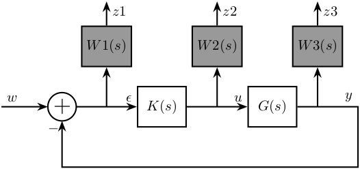
11.7 4 blocs criterion
\begin{tikzpicture} \node[addb={+}{}{}{}{-}] (addsub) {}; \node[block, right=1 of addsub, opacity=0] (K) {$K(s)$}; \node[addb={+}{}{}{}{}, right=1.8 of K] (addcommand) {}; \node[block, right=1 of addcommand] (G) {$G(s)$}; % Weighting Functions \node[block, fill=black!40] (w1) at ($0.5*(K.west) + 0.5*(addsub.east) + (0, 1.5)$) {$W1(s)$}; \node[block, fill=black!40] (w2) at ($0.5*(addcommand.west) + 0.5*(K.east) + (0, 1.5)$) {$W2(s)$}; \node[block, fill=black!40] (w3) at ($0.5*(G.west) + 0.5*(addcommand.east) + (0, 1.5)$) {$W3(s)$}; % Arrows \draw[->] ($0.5*(K.west) + 0.5*(addsub.east) $) -- (w1); \draw[->] ($0.5*(addcommand.west) + 0.5*(K.east)$) -- (w2); \draw[->] (w3) -| (addcommand.north) node[above right]{$d$}; \draw[->] (w1.north) -- ++(0, 0.6) node[right]{$\hat{\epsilon}$}; \draw[->] (w2.north) -- ++(0, 0.6) node[right]{$\hat{u}$}; \draw[<-] (w3.east) -- ++(0.6, 0) node[above]{$\hat{d}$}; \draw[<-] (addsub) -- ++(-1.5, 0)node[above right]{$r$}; \draw[->] (addsub) -- (K.west) node[above left]{$\epsilon$}; \draw[->] (K.east)node[above right]{$u$} -- (addcommand); \draw[->] (addcommand) -- (G); \draw[->] (G.east) node[above right]{$y$} -- ++(0.6, 0) -- ++(0, -1.5) -| (addsub); \end{tikzpicture}

11.8 4 blocs criterion - bis
\begin{tikzpicture} \node[addb] (addsub) {}; \node[block, left=1.0 of addsub, fill=black!40] (1) {$1/1$}; \node[block, right=1.8 of addsub] (correcteur) {$K(s)$}; \node[addb, right=1.8 of correcteur] (addcommand) {}; \node[block, right=1.8 of addcommand] (system) {$G(s)$}; \node[block, fill=black!40] (w1) at ($0.5*(correcteur.west) + 0.5*(addsub.east) + (0, 1.5)$) {$W1(s)$}; \node[block, fill=black!40] (w2) at ($0.5*(addcommand.west) + 0.5*(correcteur.east) + (0, 1.5)$) {$W2(s)$}; \node[block, fill=black!40] (w3) at ($0.5*(system.west) + 0.5*(addcommand.east) + (0, 1.5)$) {$W3(s)$}; \node[addb] (addnoise) at ($(system.east) + (0.8, -1.5)$) {}; \node[block, fill=black!40] (w4) at ($(addnoise) + (-1.5, -1.5)$) {$W4(s)$}; \draw[->] ($0.5*(correcteur.west) + 0.5*(addsub.east) $) -- (w1); \draw[->] ($0.5*(addcommand.west) + 0.5*(correcteur.east)$) -- (w2); \draw[->] (w3) -| (addcommand.north) node[above right]{$p$}; \draw[->] (w1.north) -- ++(0, 0.6) node[right]{$z1$}; \draw[->] (w2.north) -- ++(0, 0.6) node[right]{$z2$}; \draw[<-] (w3.east) -- ++(0.6, 0) node[above]{$w2$}; \draw[<-] (1) -- ++(-1.5, 0)node[above right]{$w1$}; \draw[->] (1) -- (addsub) node[midway, above]{$c$}; \draw[->] (addsub) -- (correcteur.west) node[above left]{$\epsilon$}; \draw[->] (correcteur.east)node[above right]{$u$} -- (addcommand); \draw[->] (addcommand) -- (system); \draw[->] (system.east) node[above right]{$y$} -| (addnoise); \draw[->] (addnoise.west) -| (addsub); \draw[->] (w4.east) -| (addnoise); \draw[<-] (w4.west) -- ++(-0.6, 0) node[above]{$w4$}; \end{tikzpicture}
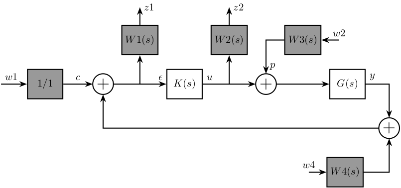
11.9 4 blocs criterion - General conf
\begin{tikzpicture} % Blocs \node[addb={+}{}{}{}{}] (addd) {}; \node[block, right=1 of addd] (G) {$G$}; \node[addb={+}{-}{}{}{}, right=1 of G] (addr) {}; % Inputs \coordinate[left=1.5 of addd] (u); \coordinate[above=1 of u] (d); \coordinate[above=1 of d] (r); % Outputs \coordinate[right=2 of addr] (y); \coordinate[above=1.5 of y] (u); \coordinate[above=1 of u] (e); \node[fit={($(e) + (-0.5, 0.5)$) ($(d|-G.south) + (0.5, -0.2)$)}, inner sep=0pt, draw, dashed, color=gray, label={Generalized Plant $P$}] (P) {}; \node[draw, block, below=1 of P] (K) {$K$}; % Connections \draw[->] (addd.east) -- (G.west); \draw[->] (G.east) -- (addr.west); \draw[->] (d)node[above right]{$d$} -| (addd.north); \draw[->] (r)node[above right]{$r$} -| (addr.north); \draw[->] ($(G.west)+(-0.5, 0)$)node[branch]{} |- (u) node[above left]{$u$}; \draw[->] ($(addr.east)+(0.5, 0)$)node[branch]{} |- (e) node[above left]{$\epsilon$}; \draw[->] (addr.east) -- (addr-|u) |- node[near start, right]{$v$} (K.east); \draw[<-] (addd.west) -- (addd-|d) |- node[near start, left]{$u$} (K.west); % W and Z brackets \draw [decoration={brace, raise=7pt}, decorate] (d.south west) -- node[left=8pt]{$w$} (r.north west); \draw [decoration={brace, raise=5pt}, decorate] (e.north east) -- node[right=6pt]{$z$} (u.south east); \end{tikzpicture}
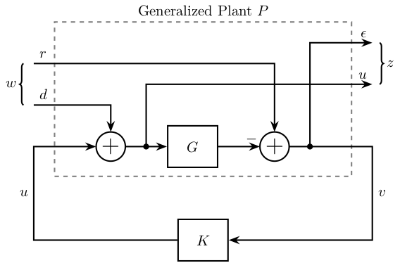
11.10 4 blocs criterion - General conf with noise
\begin{tikzpicture} % Blocs \node[addb={+}{}{}{}{}] (addd) {}; \node[block, right=1 of addd] (G) {$G$}; \node[addb={+}{}{}{}{}, right=1 of G] (addn) {}; \node[addb={+}{-}{}{}{}, right=1 of addn] (addr) {}; % Inputs \coordinate[left=1 of addd] (u); \coordinate[above=1 of u] (d); \coordinate[above=1 of d] (n); \coordinate[above=1 of n] (r); % Outputs \coordinate[right=1.5 of addr] (y); \coordinate[above=1.5 of y] (u); \coordinate[above=1 of u] (e); \node[fit={($(r) + (0.5, 0.5)$) ($(e|-G.south) + (-0.6, -0.2)$)}, inner sep=0pt, draw, dashed, color=gray, label={Generalized Plant $P$}] (P) {}; \node[draw, block, below=1 of P] (K) {$K$}; % Connections \draw[->] (addd.east) -- (G.west); \draw[->] (G.east) -- (addn.west); \draw[->] (d)node[above right]{$d$} -| (addd.north); \draw[->] (n)node[above right]{$n$} -| (addn.north); \draw[->] (r)node[above right]{$r$} -| (addr.north); \draw[->] ($(G.west)+(-0.5, 0)$)node[branch]{} |- (u) node[above left]{$u$}; \draw[->] ($(addr.east)+(0.5, 0)$)node[branch]{} |- (e) node[above left]{$\epsilon$}; \draw[->] (addn.east) -- (addr.west); \draw[->] (addr.east) -- (addr-|u) |- node[near start, right]{$v$} (K.east); \draw[<-] (addd.west) -- (addd-|n) |- node[near start, left]{$u$} (K.west); % W and Z brackets \draw [decoration={brace, raise=7pt}, decorate] (d.south west) -- node[left=8pt]{$w$} ($(r.north west)+(0,0.2)$); \draw [decoration={brace, raise=5pt}, decorate] ($(e.north east)+(0,0.2)$) -- node[right=6pt]{$z$} (u.south east); \end{tikzpicture}

11.11 Two Degrees of Freedom - H-infinity
\begin{tikzpicture} \node[block] (Wi) at (0, 0){$W_i$}; \node[block, right=1 of Wi] (K1){$K_1$}; \node[addb, right=1 of K1] (addfb){}; \node[block, right=1 of addfb] (W1){$W_1$}; \node[block, right=1 of W1] (G){$G$}; \node[block, below=0.7 of W1] (K2){$K_2$}; \draw[<-] (Wi.west) -- ++(-0.8, 0) node[above right]{$r$}; \draw[->] (Wi.east) -- (K1.west); \draw[->] (K1.east) -- (addfb.west); \draw[->] (addfb.east) -- (W1.west); \draw[->] (W1.east) -- (G.west); \draw[->] (G.east) -- ++(1, 0)node[above left]{$y$}; \draw[->] ($(G.east)+(0.5, 0)$) node[branch]{} |- (K2.east); \draw[<-] (K2.west) -| (addfb.south); \begin{scope}[on background layer] \node[fit={(Wi.west|-K2.south) (W1.north east)}, fill=black!20!white, draw, dashed, inner sep=8pt] (K) {}; \node[above right] at (K.south west) {Controller}; \end{scope} \end{tikzpicture}
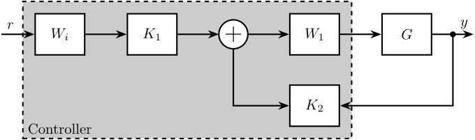
12 MIMO Control
12.1 Plant
\begin{tikzpicture} \node[block] (G) at (0, 0) {$G$}; % Connections and labels \draw[<-] (G.west) node[above left]{$\begin{bmatrix}F_1\\F_2\\F_3\end{bmatrix}$} -- ++(-1.2, 0); \draw[->] (G.east) node[above right]{$\begin{bmatrix}D_x\\D_y\\R_z\end{bmatrix}$} -- ++( 1.2, 0); \end{tikzpicture}
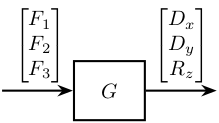
12.2 Plant - Leg measurement
\begin{tikzpicture} \node[block] (G) at (0, 0) {$G$}; % Connections and labels \draw[<-] (G.west) node[above left]{$\begin{bmatrix}F_1\\F_2\\F_3\end{bmatrix}$} -- ++(-1.2, 0); \draw[->] (G.east) node[above right]{$\begin{bmatrix}D_1\\D_1\\D_1\end{bmatrix}$} -- ++( 1.2, 0); \end{tikzpicture}
12.3 Jacobian
\begin{tikzpicture} \node[block] (G) at (0, 0) {$G$}; \node[block, left=1 of G] (Jf) {${J_f}^{-T}$}; % Connections and labels \draw[->] (Jf.east) -- node[midway, above]{$\begin{bmatrix}F_1\\F_2\\F_3\end{bmatrix}$} (G.west); \draw[->] (G.east) node[above right]{$\begin{bmatrix}D_x\\D_y\\R_z\end{bmatrix}$} -- ++( 1.2, 0); \draw[<-] (Jf.west) node[above left]{$\begin{bmatrix}F_x\\F_y\\M_z\end{bmatrix}$} -- ++(-1.2, 0); \end{tikzpicture}

12.4 Jacobian Control - Cartesian Frame
\begin{tikzpicture} \node[block] (G) at (0, 0) {$G$}; \node[block, left=1 of G] (Jf) {${J_f}^{-T}$}; \node[block, left=1 of Jf] (K) {$K$}; \node[addb={+}{}{}{}{-}, left=1 of K] (subfb) {}; % Connections and labels \draw[<-] (subfb.west) node[above left]{$\begin{bmatrix}r_{D_x}\\r_{D_y}\\r_{R_z}\end{bmatrix}$} -- ++(-1.2, 0); \draw[->] (subfb.east) -- node[midway, above]{$\begin{bmatrix}\epsilon_{D_x}\\\epsilon_{D_y}\\\epsilon_{R_z}\end{bmatrix}$} (K.west); \draw[->] (K.east) -- node[midway, above]{$\begin{bmatrix}F_x\\F_y\\M_z\end{bmatrix}$} (Jf.west); \draw[->] (Jf.east) -- node[midway, above]{$\begin{bmatrix}F_1\\F_2\\F_3\end{bmatrix}$} (G.west); \draw[->] (G.east) node[above right]{$\begin{bmatrix}D_x\\D_y\\R_z\end{bmatrix}$} -- ++( 1.4, 0); \draw[->] ($(G.east)+(0.8,0)$)node[branch]{} -- ++(0, -1) -| (subfb.south); \end{tikzpicture}

12.5 Jacobian Control - Cartesian Frame
\begin{tikzpicture} \node[block] (G) at (0, 0) {$G$}; \node[block, left=1 of G] (K) {$K$}; \node[addb={+}{}{}{}{-}, left=1 of K] (subfb) {}; \node[block, left=1 of subfb] (Jd) {$J_d$}; % Connections and labels \draw[<-] (Jd.west) node[above left]{$\begin{bmatrix}r_{D_x}\\r_{D_y}\\r_{R_z}\end{bmatrix}$} -- ++(-1.2, 0); \draw[->] (Jd.east) -- node[midway, above]{$\begin{bmatrix}r_{D_1}\\r_{D_2}\\r_{D_3}\end{bmatrix}$} (subfb.west); \draw[->] (subfb.east) -- node[midway, above]{$\begin{bmatrix}\epsilon_{D_1}\\\epsilon_{D_2}\\\epsilon_{D_3}\end{bmatrix}$} (K.west); \draw[->] (K.east) -- node[midway, above]{$\begin{bmatrix}F_1\\F_2\\F_3\end{bmatrix}$} (G.west); \draw[->] (G.east) node[above right]{$\begin{bmatrix}D_1\\D_2\\D_3\end{bmatrix}$} -- ++( 1.4, 0); \draw[->] ($(G.east)+(0.8,0)$)node[branch]{} -- ++(0, -1) -| (subfb.south); \end{tikzpicture}

12.6 Modal Transformation
\begin{tikzpicture} \node[block] (G) at (0, 0) {$G$}; \node[block, left=1 of G] (Jf) {$J_f^{-1}$}; \node[block, left=1 of Jf] (phit) {$\Phi$}; \node[block, right=1 of G] (phi) {$\Phi^{-1}$}; \node[block, below=1 of G] (K) {$K_m$}; % Connections and labels \draw[->] (phit.east) -- node[midway, above]{$\begin{bmatrix}F_x\\F_y\\M_z\end{bmatrix}$} (Jf.west); \draw[->] (Jf.east) -- node[midway, above]{$\begin{bmatrix}F_1\\F_2\\F_3\end{bmatrix}$} (G.west); \draw[->] (G.east) -- node[midway, above]{$\begin{bmatrix}D_x\\D_y\\R_z\end{bmatrix}$} (phi.west); \draw[->] (phi.east) node[above right]{$\begin{bmatrix}\mathcal{D}_1\\\mathcal{D}_2\\\mathcal{D}_3\end{bmatrix}$} -- ++(0.8, 0) |- (K.east); \draw[<-] (phit.west) node[above left]{$\begin{bmatrix}\mathcal{F}_1\\\mathcal{F}_2\\\mathcal{F}_3\end{bmatrix}$} -- ++(-0.8, 0) |- (K.west); \end{tikzpicture}
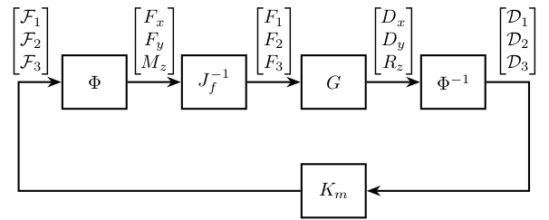
12.7 SVD Control - Static
\begin{tikzpicture} \node[block] (G) at (0, 0) {$G$}; \node[block, left=1 of G] (V) {$V_0^{-T}$}; \node[block, right=1 of G] (U) {$U_0^{-1}$}; \node[block, below=1 of G] (K) {$K_{\Sigma_0}$}; % Connections and labels \draw[->] (V.east) -- node[midway, above]{$\begin{bmatrix}F_1\\F_2\\F_3\end{bmatrix}$} (G.west); \draw[->] (G.east) -- node[midway, above]{$\begin{bmatrix}D_x\\D_y\\R_z\end{bmatrix}$} (U.west); \draw[->] (U.east) node[above right]{$\begin{bmatrix}\mathcal{D}_1\\\mathcal{D}_2\\\mathcal{D}_3\end{bmatrix}$} -- ++(0.8, 0) |- (K.east); \draw[<-] (V.west) node[above left]{$\begin{bmatrix}\mathcal{F}_1\\\mathcal{F}_2\\\mathcal{F}_3\end{bmatrix}$} -- ++(-0.8, 0) |- (K.west); \end{tikzpicture}
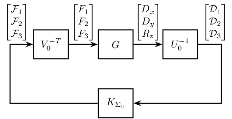
12.8 Inverse Based Control
\begin{tikzpicture} \node[block] (G) at (0, 0) {$G$}; \node[block, left=1 of G] (W1) {$W_1$}; \node[block, below=1 of G] (K) {$K_{\text{inv}}$}; % Connections and labels \draw[->] (W1.east) -- node[midway, above]{$\begin{bmatrix}F_x\\F_y\\M_z\end{bmatrix}$} (G); \draw[->] (G.east) node[above right]{$\begin{bmatrix}\mathcal{D}_x\\\mathcal{D}_y\\\mathcal{R}_z\end{bmatrix}$} -- ++(0.8, 0) |- (K.east); \draw[<-] (W1.west) node[above left]{$\begin{bmatrix}\mathcal{F}_x\\\mathcal{F}_y\\\mathcal{M}_z\end{bmatrix}$} -- ++(-0.8, 0) |- (K.west); \end{tikzpicture}

12.9 MIMO Sensor Fusion
\begin{tikzpicture} \node[addb={+}{}{}{}{-}] (addfb) at (0, 0){}; \node[block, right=0.75 of addfb] (K){$K$}; \node[block, right=1.5 of K] (G){$G^\prime$}; \node[addb={+}{}{}{}{}, right=0.75 of G] (adddy){}; \coordinate[] (KG) at ($0.5*(K.east)+0.5*(G.west)$); \node[block, below=0.75 of KG] (Gm){$G$}; \node[block, below=0.75 of Gm] (Hh){$H_H$}; \node[addb={+}{}{}{}{}, below=0.75 of Hh] (addsf){}; \node[block] (Hl) at (addsf-|G) {$H_L$}; \node[addb={+}{}{}{}{}, right=1.5 of Hl] (addn) {}; \draw[->] (addfb.east) -- (K.west) node[above left]{}; \draw[->] (K.east) -- (G.west) node[above left]{$u$}; \draw[->] (KG) node[branch]{} -- (Gm.north); \draw[->] (Gm.south) -- (Hh.north); \draw[->] (Hh.south) -- (addsf.north) node[above left]{}; \draw[->] (Hl.west) -- (addsf.east); \draw[->] (addsf.west) -| (addfb.south) node[below right]{}; \draw[->] (G.east) -- (adddy.west); \draw[<-] (addn.east) -- ++(0.75, 0) coordinate[](endpos) node[above left]{$n$}; \draw[->] (adddy.east) -- (G-|endpos) node[above left]{$y$}; \draw[->] (adddy-|addn) node[branch]{} -- (addn.north); \draw[<-] (addfb.west) -- ++(-0.75, 0) node[above right]{$r$}; \draw[->] (addn.west) -- (Hl.east) node[above right]{$y_m$}; \draw[<-] (adddy.north) -- ++(0, 0.75) node[below right]{$d_y$}; \end{tikzpicture}

12.10 MIMO Sensor Fusion - Equivalent Feedback Control
\begin{tikzpicture} \node[addb={+}{}{}{}{-}] (addfb) at (0, 0){}; \node[block, right=0.75 of addfb] (K){$K_{\text{fb}}$}; \node[block, right=0.75 of K] (G){$G^\prime$}; \node[addb={+}{}{}{}{}, right=0.75 of G] (adddy){}; \node[addb={+}{}{}{}{}, below right=0.75 and 0.5 of adddy] (addn) {}; \node[block] (Hl) at (G|-addn) {$H_L$}; \draw[->] (addfb.east) -- (K.west) node[above left]{}; \draw[->] (K.east) -- (G.west) node[above left]{$u$}; \draw[->] (G.east) -- (adddy.west); \draw[<-] (addn.east) -- ++(0.75, 0) coordinate[](endpos) node[above left]{$n$}; \draw[->] (G-|addn)node[branch]{} -- (addn.north); \draw[->] (adddy.east) -- (G-|endpos) node[above left]{$y$}; \draw[<-] (addfb.west) -- ++(-0.75, 0) node[above right]{$r$}; \draw[->] (addn.west) -- (Hl.east); \draw[->] (Hl.west) -| (addfb.south); \draw[<-] (adddy.north) -- ++(0, 0.75) node[below right]{$d_y$}; \end{tikzpicture}

12.11 MIMO Sensor Fusion - Equivalent Feedback Control - bis
\begin{tikzpicture} \node[addb={+}{}{}{}{-}] (addfb) at (0, 0){}; \node[block, right=0.75 of addfb] (Hh){${H_H}^{-1}$}; \node[block, right=0.75 of Hh] (Ginv){$G^{-1}$}; \node[block, right=0.75 of Ginv] (G){$G^\prime$}; \node[addb={+}{}{}{}{}, right=0.75 of G] (adddy){}; \node[addb={+}{}{}{}{}, below right=0.75 and 0.5 of adddy] (addn) {}; \node[block] (Hl) at (G|-addn) {$H_L$}; \draw[->] (addfb.east) -- (Hh.west) node[above left]{}; \draw[->] (Hh.east) -- (Ginv.west) node[above left]{}; \draw[->] (Ginv.east) -- (G.west) node[above left]{$u$}; \draw[->] (G.east) -- (adddy.west); \draw[<-] (addn.east) -- ++(0.75, 0) coordinate[](endpos) node[above left]{$n$}; \draw[->] (G-|addn)node[branch]{} -- (addn.north); \draw[->] (adddy.east) -- (G-|endpos) node[above left]{$y$}; \draw[<-] (addfb.west) -- ++(-0.75, 0) node[above right]{$r$}; \draw[->] (addn.west) -- (Hl.east); \draw[->] (Hl.west) -| (addfb.south); \draw[<-] (adddy.north) -- ++(0, 0.75) node[below right]{$d_y$}; \end{tikzpicture}

13 Others
13.1 Huddle test
\begin{tikzpicture} \coordinate[] (U) at (0, 0) {}; \node[addb={+}{}{}{}{}, above right=1 and 2 of U] (add1) {}; \node[addb={+}{}{}{}{}, below right=1 and 2 of U] (add2) {}; \node[block, right=0.5 of add1] (S1) {$S_1$}; \node[block, right=0.5 of add2] (S2) {$S_2$}; \draw[] (U) node[above right]{$U$} -- ++(1, 0) node[]{$\bullet$}; \draw[->] ($(U)+(1, 0)$) |- (add1.west); \draw[->] ($(U)+(1, 0)$) |- (add2.west); \draw[->] (add1.east) -- (S1.west); \draw[->] (add2.east) -- (S2.west); \draw[->] (S1.east) -- ++(1, 0) node[above]{$X$}; \draw[->] (S2.east) -- ++(1, 0) node[above]{$Y$}; \draw[<-] (add1.north) -- ++(0, 0.8)node[right]{$N$}; \draw[<-] (add2.north) -- ++(0, 0.8)node[right]{$M$}; \end{tikzpicture}
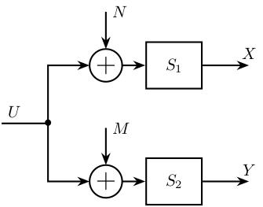
13.2 Coprime uncertainty
\begin{tikzpicture} % Blocs \node[block] (K) {$-K$}; \node[addb={+}{+}{+}{}{}, above=1 of K] (add) {}; \node[addb={+}{+}{}{-}{}, above=1 of add] (sub) {}; \node[block, right=1 of add] (Ml) {$M_l^{-1}$}; \node[block, left =1 of add] (Nl) {$N_l$}; \node[block, right=1 of sub] (Dm) {$\Delta_M$}; \node[block, left =1 of sub] (Dn) {$\Delta_N$}; % Connections and labels \draw[->] (K.west) -- ++(-3, 0) |- (Nl.west); \draw[->] ($(Nl.west) + (-0.6, 0)$)node[branch]{} |- (Dn.west); \draw[->] (Dn.east) -- (sub.west); \draw[->] (Nl.east) -- (add.west); \draw[->] (sub.south) -- (add.north); \draw[->] (add.east) -- (Ml.west); \draw[<-] (sub.east) -- (Dm.west); \draw[<-] (K.east) -- ++(3, 0) |- (Ml.east); \draw[->] ($(Ml.east) + (0.6, 0)$)node[branch]{} |- (Dm.east); \end{tikzpicture}

13.3 Coprime uncertainty - Bis
\begin{tikzpicture} % Blocs \node[block] (K) {$-K$}; \node[addb={+}{+}{+}{}{}, above=1 of K] (add) {}; \node[addb={+}{+}{}{-}{}, above=1 of add] (sub) {}; \node[block, right=1 of add] (Ml) {$M^{-1}$}; \node[block, left =1 of add] (Nl) {$N$}; \node[block, right=1 of sub] (Dm) {$\Delta_M$}; \node[block, left =1 of sub] (Dn) {$\Delta_N$}; % Connections and labels \draw[->] (K.west) -- ++(-3, 0) |- (Nl.west); \draw[->] ($(Nl.west) + (-0.6, 0)$)node[branch]{}node[below]{$u$} |- (Dn.west); \draw[->] (Dn.east) -- (sub.west); \draw[->] (Nl.east) -- (add.west); \draw[->] (sub.south) -- node[midway, left]{$\phi$} (add.north); \draw[->] (add.east) -- (Ml.west); \draw[<-] (sub.east) -- (Dm.west); \draw[<-] (K.east) -- ++(3, 0) |- (Ml.east); \draw[->] ($(Ml.east) + (0.6, 0)$)node[branch]{}node[below]{$y$} |- (Dm.east); \end{tikzpicture}

13.4 Shaped Plant
\begin{tikzpicture} \node[block] (G) {$G$}; \node[block, left =1 of G] (W1) {$W_1$}; \node[block, right=1 of G] (W2) {$W_2$}; \node[block, below=0.6 of G] (Ks) {$K_s$}; \node[fit={($(W2.north east) + (0.5, 0.2)$) ($(W1.south west) - (0.5, 0.2)$)}, inner sep=0pt, draw, dashed, color=gray, label={$G_s$}] (Gs) {}; \draw[->] (W1.east) -- (G.west); \draw[->] (G.east) -- (W2.west); \draw[->] (W2.east) -- ++(0.8, 0) |- (Ks.east); \draw[<-] (W1.west) -- ++(-0.8, 0) |- (Ks.west); \end{tikzpicture}
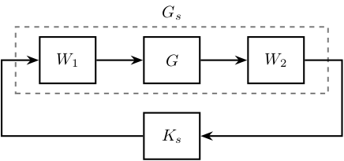
13.5 Practical Implementation
\begin{tikzpicture} \node[block] (prefilter) {$K_s(0)W_2(0)$}; \node[addb={+}{-}{}{}{+}, right=0.6 of prefilter] (addb) {}; \node[block, right=1 of addb] (W1) {$W_1$}; \node[block, right=1 of W1] (G) {$G$}; \node[block, below=0.6 of G] (W2) {$W_2$}; \node[block, below=0.6 of W1] (Ks) {$K_s$}; \draw[<-] (prefilter.west) -- ++(-0.6, 0) node[above right]{$r$}; \draw[->] (prefilter.east) -- (addb.west); \draw[->] (addb.east) --node[midway, above]{$u_s$} (W1.west); \draw[->] (W1.east) --node[midway, above]{$u$} (G.west); \draw[->] (G.east) -- ++(1, 0) node[above left]{$y$}; \draw[->] ($(G.east)+(0.4, 0)$)node[branch]{} |- (W2); \draw[->] (W2.west) --node[midway, above]{$y_s$} (Ks.east); \draw[->] (Ks.west) -| (addb.south); % \draw[->] (W2.east) -- ++(0.8, 0) |- (Ks.east); % \draw[<-] (W1.west) -- ++(-0.8, 0) |- (Ks.west); \end{tikzpicture}
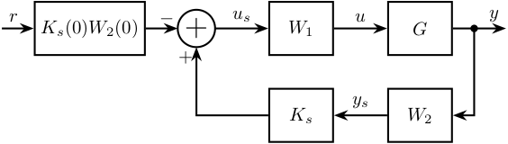
13.6 Anti-Windup
\begin{tikzpicture} \node[block={1cm}{1.5cm}] (W1) {$W_1$}; \node[block={1.5cm}{1.5cm}, right=1 of W1, label={[align=center]Actuator\\Saturation}] (sat) {}; \node[block, right=1 of sat] (G) {$G$}; % Saturation \draw[->, line width=0.5pt] ($(sat.west)!0.1!(sat.east)$) -- ($(sat.west)!0.9!(sat.east)$); \draw[->, line width=0.5pt] ($(sat.south)!0.1!(sat.north)$) -- ($(sat.south)!0.9!(sat.north)$); \draw[line width=0.5pt] ($(sat.south west)!0.3!(sat.north east)-(0.1, 0)$) -- ++(0.2, 0) -- ($(sat.south west)!0.7!(sat.north east)+(-0.1, 0)$) -- ($(sat.south west)!0.7!(sat.north east)+(0.1, 0)$); % Inputs of the controllers \coordinate[] (inputr) at ($(W1.south west)!0.75!(W1.north west)$); \coordinate[] (inputy) at ($(W1.south west)!0.25!(W1.north west)$); % Connections and labels \draw[<-] (inputr) -- ++(-0.8, 0) node[above right]{$u_s$}; \draw[->] (W1.east) -- node[midway, above]{$u$} (sat.west); \draw[->] (sat.east) -- (G.west); \draw[<-] (inputy) -| ++(-0.6, -0.8) -| ($(sat.east)!0.5!(G.west)$)node[branch]{}node[above]{$u_a$}; \draw[->] (G.east) -- ++(0.8, 0); \end{tikzpicture}
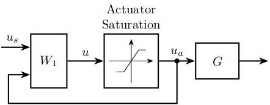
13.7 Block Diagonal Scalings
\begin{tikzpicture} % Blocs \node[block={1.5cm}{1.5cm}] (delta) {$\begin{matrix}\Delta_1 & & \\ & \Delta_2 & \\ & & \ddots \end{matrix}$}; \node[block, right=1 of delta] (Dm) {$D^{-1}$}; \node[block, left=1 of delta] (D) {$D$}; \node[block={1.5cm}{1cm}, below=1.5 of delta] (M) {$M$}; \node[block] (Dbm) at (M-|D) {$D^{-1}$}; \node[block] (Db) at (M-|Dm) {$D$}; % Connections \draw[->] (Dbm.east) -- (M.west); \draw[->] (M.east) -- (Db.west); \draw[->] (Db.east) -- ++(1, 0) |- (Dm.east); \draw[->] (Dm.west) -- (delta.east); \draw[->] (delta.west) -- (D.east); \draw[->] (D.west) -- ++(-1, 0) |- (Dbm.west); \node[fit={($(delta.north-|Dm.east) + (0.5, 0.2)$) ($(delta.south-|D.west) - (0.5, 0.2)$)}, inner sep=0pt, draw, dashed, color=gray, label={Same Uncertainty}] (top) {}; \node[fit={($(Db.north east) + (0.5, 0.2)$) ($(Dbm.south west) - (0.5, 0.2)$)}, inner sep=0pt, draw, dashed, color=gray, label={New $M \quad DMD^{-1}$}] (bot) {}; \end{tikzpicture}
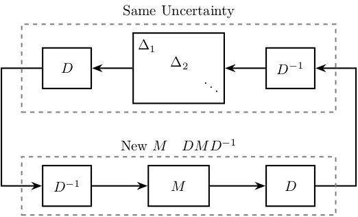
13.8 Disturbance Observer
\begin{tikzpicture} \node[addb] (addfb) at (0, 0){}; \node[addb, right=1.5 of addfb] (adddu){}; \node[block, right= of adddu] (P){$P$}; \node[block, below= of P] (Pm){${P_m}^{-1}$}; \coordinate[] (u) at ($0.5*(addfb.east)+0.5*(adddu.west)$); \node[addb={+}{}{}{-}{}] at (adddu|-Pm) (addu){}; \node[addb={+}{}{}{}{}, right= 0.5 of Pm] (addn) {}; \node[block] (Q) at (addfb|-Pm) {$Q$}; \draw[<-] (addfb.west) -- ++(-0.8, 0) node[above right]{$v$}; \draw[->] (addfb.east) -- (adddu.west); \draw[->] (adddu.east) -- (P.west); \draw[<-] (adddu.north) -- ++(0, 0.8) node[below right]{$d_u$}; \draw[<-] (addn.east) -- ++(0.8, 0) coordinate[](endpos) node[above left]{$n$}; \draw[->] (u)node[branch]{}node[above]{$u$} |- (addu.west); \draw[->] (P.east) -- (endpos|-P) node[above left]{$y$}; \draw[->] (P-|addn)node[branch]{} -- (addn.north); \draw[->] (addn.west) -- (Pm.east); \draw[->] (Pm.west) -- (addu.east); \draw[->] (addu.south) -- ++(0, -0.8)coordinate(dob_bot) -| (Q.south); \draw[->] (Q.north) -- (addfb.south); \begin{scope}[on background layer] \node[fit={(Q.west|-dob_bot) (Pm.north east)}, fill=black!10!white, draw, dashed, inner sep=5pt] (dob) {}; \node[above left] at (dob.south east) {DOB}; \end{scope} \end{tikzpicture}
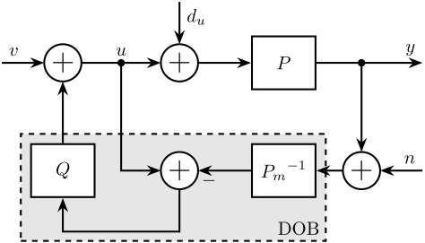
13.9 Disturbance Observer with controller
\begin{tikzpicture} \node[addb={+}{}{}{}{-}] (addfb) at (0, 0){}; \node[block, right= of addfb] (C){$C$}; \node[addb, right= of C] (addobs) {}; \node[addb, right=1.5 of addobs] (adddu){}; \node[block, right= of adddu] (P){$P$}; \node[block, below= of P] (Pm){${P_m}^{-1}$}; \coordinate[] (u) at ($0.5*(addobs.east)+0.5*(adddu.west)$); \node[addb={+}{}{}{-}{}] at (adddu|-Pm) (addu){}; \node[addb={+}{}{}{}{}, above right= 0.2 and 0.5 of Pm] (addn) {}; \node[block] (Q) at (addobs|-Pm) {$Q$}; \draw[<-] (addfb.west) -- ++(-0.8, 0) node[above right]{$r$}; \draw[->] (addfb.east) -- (C.west); \draw[->] (C.east) -- (addobs.west); \draw[->] (addobs.east) -- (adddu.west); \draw[->] (adddu.east) -- (P.west); \draw[<-] (adddu.north) -- ++(0, 0.8) node[below right]{$d_u$}; \draw[<-] (addn.east) -- ++(0.8, 0) coordinate[](endpos) node[above left]{$n$}; \draw[->] (u)node[branch]{}node[above]{$u$} |- (addu.west); \draw[->] (P.east) -- (endpos|-P) node[above left]{$y$}; \draw[->] (P-|addn)node[branch]{} -- (addn.north); \draw[->] (addn.south) |- (Pm.east); \draw[->] (Pm.west) -- (addu.east); \draw[->] (addu.south) -- ++(0, -0.8)coordinate(dob_bot) -| (Q.south); \draw[->] (Pm-|addn)node[branch]{} -- ++(0, -1.7) -| (addfb.south); \draw[->] (Q.north) -- (addobs.south); \begin{scope}[on background layer] \node[fit={(Q.west|-dob_bot) (Pm.north east)}, fill=black!10!white, draw, dashed, inner sep=5pt] (dob) {}; \node[above left] at (dob.south east) {DOB}; \end{scope} \end{tikzpicture}

13.10 Internal Model Control
\begin{tikzpicture} % Blocks \node[block] (R) at (0, 0){$R$}; \node[addb={+}{}{}{}{-}, right= of R] (addfb){}; \node[block, right= of addfb] (Gc){$G_c$}; \node[block, right= of Gc] (G){$G$}; \node[block, below=0.5 of G] (Gtilde){$\tilde{G}$}; \node[block, below=1.5 of Gc] (F){$F$}; \node[addb={+}{}{}{}{}, right= of G] (adddy){}; \node[addb={+}{-}{}{}{}, right=1.8 of Gtilde] (add) {}; % Lines \draw[<-] (R.west) -- ++(-0.8, 0) node[above right]{$r$}; \draw[->] (R.east) -- (addfb.west); \draw[->] (addfb.east) -- (Gc.west); \draw[->] (Gc.east) -- (G.west); \draw[->] (G.east) -- (adddy.west); \draw[<-] (adddy.north) -- ++(0, 0.8) node[below right]{$d_y$}; \draw[->] (adddy.east) -- ++(1, 0) node[above left]{$y$}; \draw[->] (adddy-|add)node[branch]{} -- (add.north); \draw[->] ($0.5*(Gc.east)+0.5*(G.west)$)node[branch]{}node[above]{$u$} |- (Gtilde.west); \draw[->] (Gtilde.east) -- (add.west); \draw[->] (add.south) |- (F.east); \draw[->] (F.west) -| (addfb.south); % Names \node[above, align=center] at (R.north) {Reference\\model}; \node[above, align=center] at (Gc.north) {Controller}; \node[above, align=center] at (G.north) {Process}; \node[above, align=center] at (Gtilde.north) {Model}; \node[above, align=center] at (F.north) {Filter}; \end{tikzpicture}
13.11 Inverse Based Control
\begin{tikzpicture} \node[addb={+}{}{}{}{-}] (addfb) at (0, 0){}; \node[block, right=0.6 of addfb] (K){$G^{-1} L$}; \node[block, right=0.6 of K] (G){$G^\prime$}; \node[addb={+}{}{}{}{}, right=0.6 of G] (adddy){}; \node[addb={+}{}{}{}{}, below right=0.6 and 0.6 of adddy] (addn) {}; \draw[<-] (addfb.west) -- ++(-0.6, 0) node[above right]{$r$}; \draw[->] (addfb.east) -- (K.west); \draw[->] (K.east) -- (G.west) node[above left]{$u$}; \draw[->] (G.east) -- (adddy.west); \draw[<-] (addn.east) -- ++(0.6, 0) coordinate[](endpos) node[above left]{$n$}; \draw[->] (adddy.east) -- (G-|endpos) node[above left]{$y$}; \draw[->] (adddy-|addn) node[branch]{} -- (addn.north); \draw[->] (addn.west) -| (addfb.south) node[below right]{$y_m$}; \draw[<-] (adddy.north) -- ++(0, 0.6) node[below right]{$d$}; \end{tikzpicture}